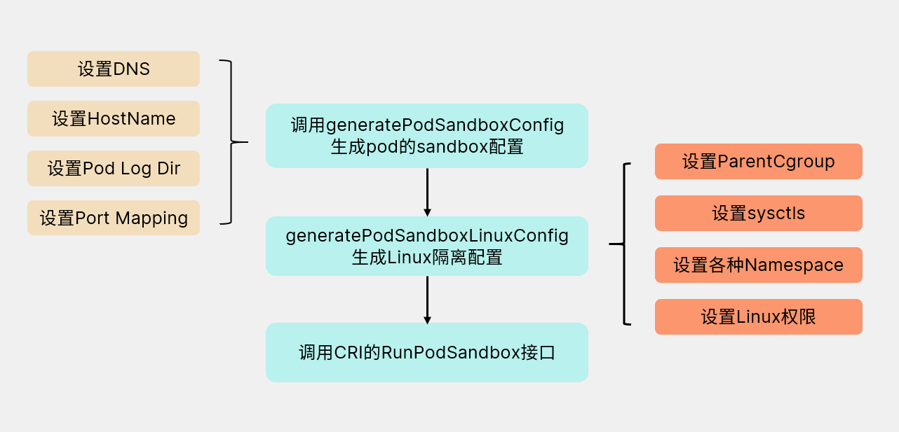
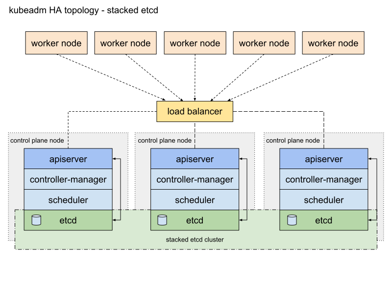
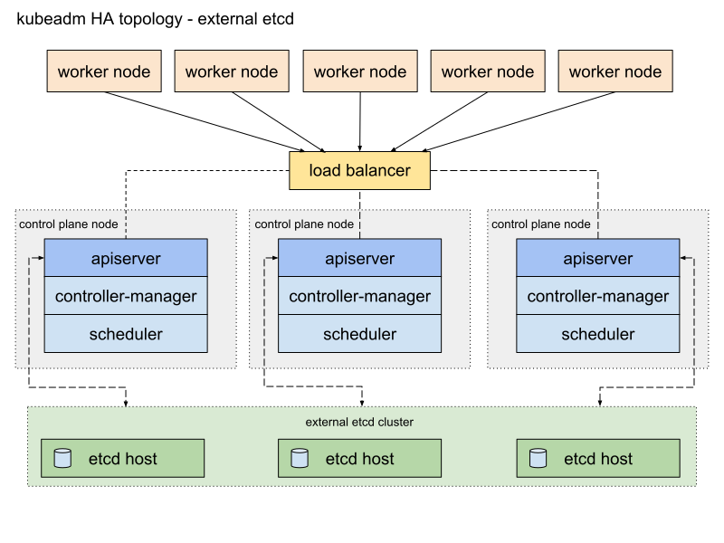
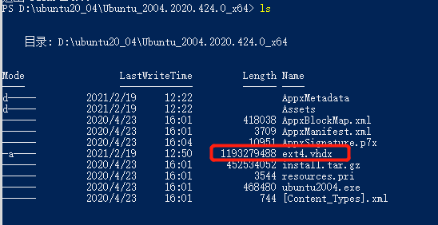
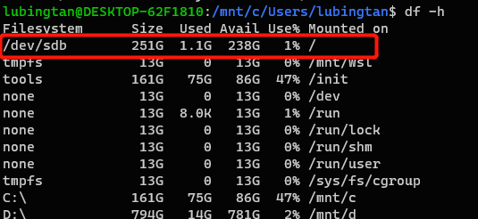
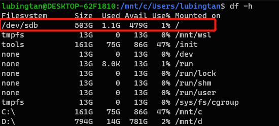

Graph View
Latest updates
2026-06-18
Cluster API: 声明式集群生命周期管理
2026-05-21
Apache Mesos: 分布式系统内核
2026-05-18
2026-05-18 2026-05-18 2026-05-18
Slurm: HPC 集群工作负载管理器
2026-05-08
DevOps 理念与实践
2026-05-07
Kueue: Kubernetes 原生作业队列管理器
Open MPI 架构介绍
2026-04-30
vLLM Production Stack 实战
2026-04-29
2026-01-07
WIndows开发环境配置
2026-04-29
Docker环境配置
Bash以及命令行工具技巧集合
2026-01-04
What is Kubernetes
k8s scheduler 源码分析
client-go list & watch 原理
2025-12-31
Pod
2_kubernetes-api-server
What is Kubernetes Service
cni详解
flowschema
k8s之pleg
Kubelet 原理
kubernetes_ha
rbac
一份容器知识备忘录
Model Mesh Serving: 一种可以大规模部署ML模型的解决方案
CICD
DevOps 理念与实践
CI/CD Pipeline
Pipeline as Code
Pipeline 的定义应该与项目代码放在一起，这样能确保 pipeline 在特定项目中正常工作，且 pipeline 本身的变更也能被充分测试。
正面案例：GitHub Actions
- 由 PR 事件触发的 workflow 定义在 git 仓库中，与其他代码一起管理
- 当 PR 包含对 workflow 的修改时，该 PR 会使用修改后的 workflow 运行
- 同时，其他 PR 仍然使用 master 分支中定义的 workflow
反例：Prow
- 所有 presubmit/postsubmit 任务预定义在集中式仓库中，无法仅针对某个 PR 进行修改
- Pipeline 的变更与项目代码分离，测试和迭代困难
可复用 Pipeline
一个 workflow 应包含以下基本组件：
- 触发 workflow 的事件（event）
- 在 runner 上执行的 job，包含一系列 step
- 每个 step 可以运行脚本，或调用一个可复用的 action
可复用的关键在于**构建块（building block）**设计：
- Step 是基本构建块：Action 包含多个 Step，Step 可以调用 Action
- Job 也是构建块：Workflow 包含多个 Job，Job 可以调用 Workflow
反例：Tekton Pipeline
- Pipeline 包含多个 Task，Task 包含多个 Step
- Pipeline 不能调用另一个 Pipeline，Task 不能调用另一个 Task，Step 不能调用另一个 Step
- 没有构建块机制，导致复用代码时必须复制粘贴
性能指标
CI/CD 系统的基本性能可以用效率来衡量：
Efficiency = User Time / (User Time + System Time)
- User Time：从实际执行到用户定义任务完成的时间
- System Time：用户不关心的系统开销（如 event 处理、资源创建/更新、Pod 调度、参数传递等）
此外，应监控和优化用户定义任务本身的性能，例如启用 Go、Maven、Docker 等构建缓存。
可靠性指标
Pipeline Reliability = (成功运行次数 - 由用户任务导致的失败次数) / 总运行次数
由用户任务导致的失败不计入 CI/CD 系统的故障统计，因为这并非 CI/CD 系统的责任。
开发环境
可复现环境
搭建开发环境是一个重要障碍。由于文档不完整或开发者理解差异，最终环境可能差异很大。远程开发环境虽有优势，但网络延迟、上传/下载时间、公司安全合规限制等因素使其无法完全替代本地环境。
Docker as a Service
为什么需要 Docker as a Service 而非本地构建镜像？
- 在笔记本上安装和维护 Docker 并不简单（尤其是 macOS/Windows）
- 本地网络环境可能与数据中心不同，Dockerfile 可能需要访问内网资源
- 构建可能需要大量 CPU、内存或磁盘，本地笔记本可能无法满足
Kubernetes as a Service
每个开发者可能需要独立的 Kubernetes 环境，因为他们之间需要互相独立。通过 Kubernetes as a Service，开发者可以直接将镜像部署到 Kubernetes 上。
参考
Cluster Lifecycle
Cluster API: 声明式集群生命周期管理
What is Cluster API
Cluster API (CAPI) 是一个 Kubernetes SIG 子项目，用声明式 API 管理 Kubernetes 集群的创建、升级和销毁。它把基础设施（VM、网络、LB）和集群配置都定义为 Kubernetes CRD，用同样的 kubectl/controller 模式管理——就像管理普通 workload 一样管理整个集群。
- Go 1.26，Apache 2.0 许可证
- 当前版本 v1.13.2（v1.14.0 预发布）
- API 契约 v1beta2
核心概念
资源层级
graph TB
subgraph "User Facing"
CC[ClusterClass]
C[Cluster]
end
subgraph "Core CAPI Resources"
C --> |has| MD[MachineDeployment]
C --> |has| MP[MachinePool]
C --> |has| MS[MachineSet]
MD --> |manages| MS
MS --> |manages| M[Machine]
MP --> |manages| M
end
subgraph "Provider Resources"
C --> |references| IC[InfrastructureCluster]
C --> |references| CP[ControlPlane]
CP --> |manages| M
M --> |references| IM[InfrastructureMachine]
M --> |references| BC[BootstrapConfig]
end
subgraph "Add-ons"
C --> |references| CRS[ClusterResourceSet]
end
核心 CRD
| CRD | 功能 |
|---|---|
| Cluster | 顶层——代表一个完整的 Kubernetes 集群 |
| Machine | 单个节点——对应一台 VM 或裸金属 |
| MachineSet | 一组相同配置的 Machine（类似 ReplicaSet） |
| MachineDeployment | MachineSet 的声明式滚动更新（类似 Deployment） |
| MachinePool | 带 autoscaling 的 Machine 池 |
| ClusterClass | 可复用的集群模板（托管拓扑） |
Provider 模型
CAPI 本身不管基础设施——它通过 Provider 契约 把工作委托给外部 provider：
| Provider 类型 | 职责 | 内置实现 |
|---|---|---|
| Infrastructure | 创建 VM、网络、LB | cluster-api-provider-aws/azure/gcp/vsphere/docker |
| Bootstrap | 生成节点加入集群的配置 | kubeadm |
| Control Plane | 管理控制平面（HA/扩缩/升级） | kubeadm |
Provider 契约
graph LR
subgraph "Cluster API Core"
CC[Cluster Controller]
MC[Machine Controller]
TC[Topology Controller]
end
subgraph "Provider Contract"
IC[InfrastructureCluster]
CP[ControlPlane]
IM[InfrastructureMachine]
BC[BootstrapConfig]
end
subgraph "Infrastructure Providers"
AWS[AWS]
AZURE[Azure]
GCP[GCP]
DOCKER[Docker]
end
subgraph "Built-in Providers"
KCP[KubeadmControlPlane]
KC[KubeadmConfig]
end
CC --> IC
CC --> CP
MC --> IM
MC --> BC
TC --> CC
IC --> AWS
IC --> AZURE
IC --> GCP
IC --> DOCKER
CP --> KCP
BC --> KC
Machine 生命周期
stateDiagram-v2
[*] --> Pending: Machine created
Pending --> Provisioning: BootstrapConfig & InfraMachine exist
Provisioning --> Provisioned: InfraMachine ready
Provisioned --> Running: Node detected (NodeRef set)
Running --> Running: Periodic sync
Running --> Deleting: Machine marked for deletion
Deleting --> Deleting: Node draining
Deleting --> Deleting: Delete InfraMachine
Deleting --> Deleting: Delete BootstrapConfig
Deleting --> [*]: Machine deleted
架构
Controller Manager (main.go) — 单一二进制，用 controller-runtime 注册所有 reconciler 和 webhook。
clusterctl — CLI 工具：init（初始化管理集群）、generate cluster（生成 YAML）、move（迁移）、upgrade（升级 provider）。
Provider 契约 — 定义在 internal/contract/，通过 unstructured object 来与 provider CRD 交互，无需 Go 类型依赖。
集群创建流程
sequenceDiagram
participant User
participant CC as Cluster Controller
participant IC as InfraCluster Provider
participant KCP as KubeadmControlPlane
participant MC as Machine Controller
participant IM as InfraMachine Provider
participant BC as Bootstrap Provider
User->>CC: Create Cluster (InfraClusterRef + ControlPlaneRef)
CC->>IC: Create InfrastructureCluster
IC-->>CC: Ready, endpoint set
CC->>CC: InfrastructureReady
User->>KCP: Create KubeadmControlPlane
KCP->>MC: Create control plane Machines
MC->>BC: Create BootstrapConfig
MC->>IM: Create InfrastructureMachine
IM-->>MC: Ready (ProviderID set)
BC-->>MC: Bootstrap data ready
MC->>MC: Machine provisioned
IM->>IM: VM boots, kubeadm join
MC->>MC: Node appears, set NodeRef
CC->>CC: ControlPlaneInitialized
User->>MD: Create MachineDeployment (workers)
MD->>MS: Create MachineSet
MS->>MC: Create worker Machines
CC->>CC: All conditions met, Cluster Available
Customized Provider 最简示例
下面是一个最小化的 Infrastructure Provider，演示如何在 CAPI 框架上创建定制 provider。
1. 定义 InfrastructureCluster CRD
// api/v1alpha1/minimalcluster_types.go
package v1alpha1
import (
metav1 "k8s.io/apimachinery/pkg/apis/meta/v1"
clusterv1 "sigs.k8s.io/cluster-api/api/v1beta2"
)
// MinimalClusterSpec defines the desired state
type MinimalClusterSpec struct {
// NodeCount is the number of fake nodes to create
NodeCount int `json:"nodeCount"`
}
// MinimalClusterStatus defines the observed state
type MinimalClusterStatus struct {
Ready bool `json:"ready"`
VIP string `json:"vip,omitempty"`
}
// +kubebuilder:object:root=true
// +kubebuilder:subresource:status
type MinimalCluster struct {
metav1.TypeMeta `json:",inline"`
metav1.ObjectMeta `json:"metadata,omitempty"`
Spec MinimalClusterSpec `json:"spec,omitempty"`
Status MinimalClusterStatus `json:"status,omitempty"`
}
2. 实现 Reconciler
// internal/controller/minimalcluster_controller.go
package controller
import (
"context"
"fmt"
"sigs.k8s.io/controller-runtime/pkg/controller/controllerutil"
clusterv1 "sigs.k8s.io/cluster-api/api/v1beta2"
"sigs.k8s.io/cluster-api/util"
"sigs.k8s.io/cluster-api/util/conditions"
infrav1 "mycompany.io/capi-minimal/api/v1alpha1"
)
func (r *MinimalClusterReconciler) Reconcile(ctx context.Context, req ctrl.Request) (ctrl.Result, error) {
// 1. 获取 InfrastructureCluster 对象
minimalCluster := &infrav1.MinimalCluster{}
if err := r.Get(ctx, req.NamespacedName, minimalCluster); err != nil {
return ctrl.Result{}, client.IgnoreNotFound(err)
}
// 2. 找到对应的 CAPI Cluster (ownerRef 指向它)
cluster, err := util.GetOwnerCluster(ctx, r.Client, minimalCluster.ObjectMeta)
if err != nil {
return ctrl.Result{}, err
}
// 3. 如果 cluster 正在删除，清理资源
if !minimalCluster.DeletionTimestamp.IsZero() {
return r.reconcileDelete(ctx, minimalCluster)
}
// 4. 确保 Cluster 的 finalizer
controllerutil.AddFinalizer(minimalCluster, "minimalcluster.infrastructure.cluster.x-k8s.io")
// 5. 模拟"创建基础设施"——一个简单的逻辑
if !minimalCluster.Status.Ready {
// 在实际 provider 中，这里会调用云平台 API 创建 VM、网络等
minimalCluster.Status.VIP = fmt.Sprintf("10.0.0.%d", minimalCluster.Spec.NodeCount)
minimalCluster.Status.Ready = true
}
// 6. 将状态写入 CAPI Cluster 的 InfrastructureReady condition
if minimalCluster.Status.Ready {
conditions.MarkTrue(cluster, clusterv1.InfrastructureReadyCondition)
}
return ctrl.Result{}, r.Status().Update(ctx, minimalCluster)
}
func (r *MinimalClusterReconciler) reconcileDelete(ctx context.Context, c *infrav1.MinimalCluster) (ctrl.Result, error) {
// 清理"云资源"
c.Status.Ready = false
controllerutil.RemoveFinalizer(c, "minimalcluster.infrastructure.cluster.x-k8s.io")
return ctrl.Result{}, nil
}
3. 与 CAPI 的交互点
Provider 通过以下标准字段与 CAPI 交互：
| 交互 | InfrastructureCluster | InfrastructureMachine |
|---|---|---|
| 就绪标记 | spec.controlPlaneEndpoint + status.ready=true | status.ready=true |
| 地址 | — | status.addresses (node IP/hostname) |
| 失败 | status.failureReason / failureMessage | 同上 |
| OwnerRef | 指向 Cluster | 指向 Machine |
4. 部署使用
# 1. 以 Docker provider 为例建管理集群
clusterctl init --infrastructure docker
# 2. 生成 workload cluster YAML
clusterctl generate cluster my-cluster --flavor development \
--kubernetes-version v1.30.0 \
--control-plane-machine-count=1 \
--worker-machine-count=1 > my-cluster.yaml
# 3. 创建集群
kubectl apply -f my-cluster.yaml
# 4. 获取 kubeconfig
clusterctl get kubeconfig my-cluster > my-cluster.kubeconfig
5. Provider 注册
Provider 通过 config/ 目录的 manifest 注册自身：
# Provider 的 ClusterResourceSet —— 告诉 CAPI 如何找到这个 provider
apiVersion: clusterctl.cluster.x-k8s.io/v1alpha3
kind: InfrastructureProvider
metadata:
name: minimal
spec:
version: v0.1.0
fetchConfig:
url: https://github.com/mycompany/cluster-api-provider-minimal/releases/v0.1.0/infrastructure-components.yaml
参考
Kubernetes
What is Kubernetes
官方文档：
Kubernetes 是一个可移植的、可扩展的开源平台，用于管理容器化的工作负载和服务，可促进声明式配置和自动化。Kubernetes 拥有一个庞大且快速增长的生态系统。Kubernetes 的服务、支持和工具广泛可用。
Why use Kubernetes
应用部署方式的发展历史
传统应用发展到现在已经经历了多种部署架构：

传统部署时代：
早期应用都是直接部署在物理服务器，无法为应用程序定义资源边界，从而引起多个应用之间的资源分配问题。 例如，如果在物理机上运行多个应用程序，由于其中一个应用程序占用了大部分资源， 导致其他应用程序性能下降。 有一个解决方案是，把每个应用程序放在不同的服务器上，其存在的问题是，在进行横向扩展时无法充分利用服务器资源， 并且维护多个物理机的成本很高。
虚拟化部署时代：
针对传统部署中出现的问题，引入了虚拟化解决方案。虚拟化技术允许在单个物理机的 上运行多个虚拟机（VM）。 虚拟化可以隔离位于不同 VM中的应用程序，并提供一定程度的安全，不同VM之间不能由应用程序直接访问。
虚拟化技术能够更好地利用物理服务器上的资源，并且由于可轻松地添加或更新应用程序，从而实现更好的可伸缩性，降低硬件成本等等。
每个 VM 是一台完整的计算机，在虚拟化硬件之上运行所有组件，包括其自己的操作系统。
容器部署时代：
容器类似于 VM，但是与VM相比隔离性较低，操作系统（OS）在应用程序之间是被共享的。 因此，容器被认为是轻量级的虚拟机。容器与 VM 类似，具有自己的文件系统、CPU、内存、进程空间等。 由于它们与基础架构分离，因此可以跨云和 OS 发行版本进行移植。
容器因具有许多优势而变得流行起来。下面列出的是容器的一些好处：
- 敏捷应用程序的创建和部署：与使用 VM 镜像相比，提高了容器镜像创建的简便性和效率。
- 持续开发、集成和部署：通过快速简单的回滚（由于镜像不可变性），支持可靠且频繁的容器镜像构建和部署。
- 关注开发与运维的分离：在构建/发布时而不是在部署时创建应用程序容器镜像， 从而将应用程序与基础架构分离。
- 可观察性：不仅可以观测OS级别的信息和指标，还可以显示应用程序的健康状态以及其它指标。
- 开发、测试以及生产环境的一致性：PC与云端保持统一的运行方式。
- 跨云和操作系统发行版本的可移植性：可在 Ubuntu、RHEL、CoreOS、本地、 Google Kubernetes Engine 和其他任何地方运行。
- 以应用程序为中心的管理：提高抽象级别，从在虚拟硬件上运行 OS 到使用逻辑资源在 OS 上运行应用程序。
- 松散耦合、分布式、弹性、解放的微服务：应用程序被分解成较小的独立部分，并且可以动态部署和管理，而不是在一台大型单机上整体运行。
- 资源隔离：可预测的应用程序性能。
- 资源利用：高效率和高密度。
Kubernetes 提供的功能
Kubernetes 为你提供：
- 服务发现和负载均衡：Kubernetes 可以通过DNS 或IP 地址的方式暴露容器。如果进入容器的流量很大， Kubernetes 可以负载均衡并分发网络流量，从而使部署稳定。
- 存储编排：Kubernetes 允许你自动挂载你选择的存储系统，例如本地存储、公有云存储服务以及其它更多存储方式。
- 自动部署和回滚：你可以使用 Kubernetes 描述已部署容器的所需状态，它可以以受控的速率将实际状态更改为期望状态。例如，你可以令Kubernetes自动化地为你的部署创建新容器，删除现有容器并将它们的所有资源用于新容器。
- Automatic bin packing：Kubernetes 允许你指定每个容器所需 CPU 和内存（RAM）。 当容器指定了资源请求时，Kubernetes 可以做出更好的决策来管理容器的资源。
- 自我修复：Kubernetes 重新启动失败的容器、替换容器、杀死不响应用户定义的运行状况检查的容器，并且在准备好服务之前不将其通告给客户端。
- 密钥与配置管理：Kubernetes 允许你存储和管理敏感信息，例如密码、OAuth 令牌和 ssh 密钥。 你可以在不重建容器镜像的情况下部署和更新密钥和应用程序配置，也无需在堆栈配置中暴露密钥。
Kubernetes 不能提供的功能
Kubernetes 不是传统的、包罗万象的 PaaS（平台即服务）系统。 由于 Kubernetes 在容器级别而不是在硬件级别运行，它提供了 PaaS 产品共有的一些普遍适用的功能， 例如部署、扩展、负载均衡、日志记录和监视。 但是，Kubernetes 不是单体系统，默认解决方案都是可选和可插拔的。 Kubernetes 提供了构建开发人员平台的基础，但是在重要的地方保留了用户的选择和灵活性。
Kubernetes：
-
不限制支持的应用程序类型。 Kubernetes 旨在支持极其多种多样的工作负载，包括无状态、有状态和数据处理工作负载。 如果应用程序可以在容器中运行，那么它应该可以在 Kubernetes 上很好地运行。
-
不部署源代码，也不构建你的应用程序。 持续集成(CI)、交付和部署（CI/CD）工作流取决于组织的文化和偏好以及技术要求。
-
不提供应用程序级别的服务作为内置服务，例如中间件（例如，消息中间件）、 数据处理框架（例如，Spark）、数据库（例如，mysql）、缓存、集群存储系统 （例如，Ceph）。这样的组件可以在 Kubernetes 上运行，并且/或者可以由运行在 Kubernetes 上的应用程序通过可移植机制（例如， 开放服务代理）来访问。
-
不要求日志记录、监视或警报解决方案。 它提供了一些集成作为概念证明，并提供了收集和导出指标的机制。
-
不提供或不要求配置语言/系统（例如 jsonnet），它提供了声明性 API， 该声明性 API 可以由任意形式的声明性规范所构成。
-
不提供也不采用任何全面的机器配置、维护、管理或自我修复系统。
-
此外，Kubernetes 不仅仅是一个编排系统，实际上它消除了编排的需要。 编排的技术定义是执行已定义的工作流程：首先执行 A，然后执行 B，再执行 C。 相比之下，Kubernetes 包含一组独立的、可组合的控制过程， 这些过程连续地将当前状态驱动到所提供的所需状态。 如何从 A 到 C 的方式无关紧要，也不需要集中控制，这使得系统更易于使用 且功能更强大、系统更健壮、更为弹性和可扩展
How Kubernetes works
当你部署完 Kubernetes, 即拥有了一个完整的集群。
一个 Kubernetes 集群由一组被称作节点的机器组成。这些节点上运行 Kubernetes 所管理的容器化应用。集群具有至少一个工作节点。
工作节点托管作为应用负载的组件的 Pod 。控制平面管理集群中的工作节点和 Pod 。 为集群提供故障转移和高可用性，这些控制平面一般跨多主机运行，集群跨多个节点运行。
本文档概述了交付正常运行的 Kubernetes 集群所需的各种组件。
这张图表展示了包含所有相互关联组件的 Kubernetes 集群。

Kubernetes架构
控制面组件(Control Plane Components)
控制平面的组件对集群做出全局决策(比如调度)，以及检测和响应集群事件（例如，当不满足部署的 replicas 字段时，启动新的 pod）。
控制平面组件可以在集群中的任何节点上运行。 然而，为了简单起见，设置脚本通常会在同一个计算机上启动所有控制平面组件，并且不会在此计算机上运行用户容器。 请参阅构建高可用性集群 中对于多主机 VM 的设置示例。
kube-apiserver
apiserver是Kubernetes的控制面组件，它暴露了Kubernetes的API。apiserver也是Kubernetes的控制面前端。
Kubernetes API 服务器的主要实现是 kube-apiserver。 kube-apiserver 设计上考虑了水平伸缩，也就是说，它可通过部署多个实例进行伸缩。 你可以运行 kube-apiserver 的多个实例，并在这些实例之间平衡流量
etcd
etcd是拥有一致性以及高可用性的KV数据库，在kubernets中etcd被用于保存所有集群数据的后端存储。
在实际应用中，通常需要对etcd进行备份。
kube-scheduler
控制平面中调度器组件，负责监视新创建的、未指定运行节点（node）的 Pods，选择节点让 Pod 在上面运行。
调度决策考虑的因素包括，单个 Pod 和 Pod 集合的资源需求、硬约束/软约束/策略约束，亲和性和反亲和性spec、数据位置、工作负载间的干扰和最后时限。
kube-controller-manger
控制平面中的控制器 的组件。
从逻辑上讲，每个控制器都是一个单独的进程， 但是为了降低复杂性，它们都被编译到同一个可执行文件，并在一个进程中运行。
这些控制器包括:
- 节点控制器（Node Controller）: 负责在节点出现故障时进行通知和响应
- 任务控制器（Job controller）: 监测代表一次性任务的 Job 对象，然后创建 Pods 来运行这些任务直至完成
- 端点控制器（Endpoints Controller）: 填充端点(Endpoints)对象(即加入 Service 与 Pod)
- 服务帐户和令牌控制器（Service Account & Token Controllers）: 为新的命名空间创建默认帐户和 API 访问令牌
cloud-controller-manger
cloud-controller-manger是能够嵌入指定云的控制逻辑的组件，能够将自己的集群链接到云服务商。并且能够分离两种组件，两种组件分别是“与云服务交互的组件“，以及“与自己的集群交互的组件“。
cloud-controller-manager 仅用于特定云平台的控制回路。 如果你在自己的环境中运行 Kubernetes，或者在本地计算机中运行学习环境， 所部署的环境中不需要云控制器管理器。
与 kube-controller-manager 类似，cloud-controller-manager 将若干逻辑上独立的 控制回路组合到同一个可执行文件中，供你以同一进程的方式运行。 你可以对其执行水平扩容（运行不止一个副本）以提升性能或者增强容错能力。
下面的控制器都包含对云平台驱动的依赖：
- 节点控制器（Node Controller）: 用于在节点终止响应后检查云提供商以确定节点是否已被删除
- 路由控制器（Route Controller）: 用于在底层云基础架构中设置路由
- 服务控制器（Service Controller）: 用于创建、更新和删除云提供商负载均衡器
节点组件（Node Components）
kubelet
一个在集群中每个节点（node）上运行的代理。 它保证容器（containers）都 运行在 Pod 中。
kubelet 接收一组通过各类机制提供给它的 PodSpecs，确保这些 PodSpecs 中描述的容器处于运行状态且健康。 kubelet 不会管理不是由 Kubernetes 创建的容器。
kube-proxy
kube-proxy 是集群中每个节点上运行的网络代理， 实现 Kubernetes 服务（Service） 概念的一部分。
kube-proxy 维护节点上的网络规则。这些网络规则允许从集群内部或外部的网络会话与 Pod 进行网络通信。
如果操作系统提供了数据包过滤层并可用的话，kube-proxy 会通过它来实现网络规则。否则，kube-proxy 仅转发流量本身。
容器运行时（Container Runtime）
容器运行环境是负责运行容器的软件。
Kubernetes 支持多个容器运行环境: Docker、 containerd、CRI-O 以及任何实现 Kubernetes CRI (容器运行环境接口)。
插件（Addons）
插件使用 Kubernetes 资源（DaemonSet、 Deployment等）实现集群功能。 因为这些插件提供集群级别的功能，插件中命名空间域的资源属于 kube-system 命名空间。
下面描述众多插件中的几种。有关可用插件的完整列表，请参见 插件（Addons）
DNS
尽管其他插件都并非严格意义上的必需组件，但几乎所有 Kubernetes 集群都应该 有集群 DNS， 因为很多示例都需要 DNS 服务。
集群 DNS 是一个 DNS 服务器，和环境中的其他 DNS 服务器一起工作，它为 Kubernetes 服务提供 DNS 记录。
Kubernetes 启动的容器自动将此 DNS 服务器包含在其 DNS 搜索列表中。
Web界面（dashboard）
Dashboard 是Kubernetes 集群的通用的、基于 Web 的用户界面。 它使用户可以管理集群中运行的应用程序以及集群本身并进行故障排除
容器资源监控
容器资源监控 将关于容器的一些常见的时间序列度量值保存到一个集中的数据库中，并提供用于浏览这些数据的界面。
集群级别的日志
集群层面日志 机制负责将容器的日志数据 保存到一个集中的日志存储中，该存储能够提供搜索和浏览接口。
KubernetesAPI
Kubernetes 控制面 的核心是 API 服务器。 API 服务器负责提供 HTTP API，以供用户、集群中的不同部分和集群外部组件相互通信。
Kubernetes API 使你可以查询和操纵 Kubernetes API 中对象（例如：Pod、Namespace、ConfigMap 和 Event）的状态。
大部分操作都可以通过 kubectl 命令行接口或 类似 kubeadm 这类命令行工具来执行， 这些工具在背后也是调用 API。不过，你也可以使用 REST 调用来访问这些 API。
如果你正在编写程序来访问 Kubernetes API，可以考虑使用 客户端库之一。
OpenAPI 规范
完整的 API 细节是用 OpenAPI 来表述的。
Kubernetes API 服务器通过 /openapi/v2 末端提供 OpenAPI 规范。 你可以按照下表所给的请求头部，指定响应的格式：
| 头部 | 可选值 | 说明 |
|---|---|---|
Accept-Encoding | gzip | 不指定此头部也是可以的 |
Accept | application/com.github.proto-openapi.spec.v2@v1.0+protobuf | 主要用于集群内部 |
application/json | 默认值 | |
* | 提供application/json |
Kubernetes 为 API 实现了一种基于 Protobuf 的序列化格式，主要用于集群内部通信。 关于此格式的详细信息，可参考 Kubernetes Protobuf 序列化 设计提案。每种模式对应的接口描述语言（IDL）位于定义 API 对象的 Go 包中
API变更
Kubernetes的API废弃策略
贡献者在变更API时可以参考API变更
API组和版本
Kubernetes 支持多个 API 版本， 每一个版本都在不同 API 路径下，例如 /api/v1 或/apis/rbac.authorization.k8s.io/v1alpha1。
API扩展
有两种途径来扩展 Kubernetes API：
Kubernetes对象（Object）
What is Kubernetes Object
Kubernetes Object可以理解为REST API中的资源。可以通过Kubernetes API对Object进行创建、修改、更新、删除等操作。
在Kubernetes 中，Kubernetes Object代表了对Kubernetes系统状态的描述，例如：
- 哪些容器化应用在运行（以及在哪些节点上）
- 可以被应用使用的资源
- 关于应用运行时表现的策略，比如重启策略、升级策略，以及容错策略
可以将Kubernetes 对象视为一种声明式编程，Kubernetes 对象描述了一种目标。创建对象的过程，本质上是在告知 Kubernetes 系统，用户所需要的工作负载看起来是什么样子的， 这就是 Kubernetes 集群的 期望状态（Desired State）。
Kubernetes 对象的结构
每种 Kubernetes 对象都有自己的结构，举个例子，Deployment对象有如下结构（yaml格式）：
apiVersion: apps/v1
kind: Deployment
metadata:
name: nginx-deployment
namespace: default
labels:
environment: production
app: nginx
annotations:
imageregistry: "https://hub.docker.com/"
spec:
selector:
matchLabels:
component: redis
matchExpressions:
- {key: tier, operator: In, values: [cache]}
- {key: environment, operator: NotIn, values: [dev]}
replicas: 2 # tells deployment to run 2 pods matching the template
template:
metadata:
labels:
app: nginx
spec:
containers:
- name: nginx
image: nginx:1.14.2
ports:
- containerPort: 80
每个Kubernetes 对象都拥有如下字段。
apiVersion
对象的分组以及版本
kind
对象的种类
metadata
对象的标识，包括name、namespace、uid、labels等等
-
name作为资源名称，name的命名规范需要 符合DNS子域名以及DNS标签名的规范（详见：RFC-1123）。
- 不能超过253个字符
- 只能包含小写字母、数字，以及’-’
- 须以字母数字开头
- 须以字母数字结尾
-
namespace：名字空间为资源提供了一个分组范围。
-
资源的名称需要在名字空间内是唯一的。
-
名字空间不能相互嵌套，每个 Kubernetes 资源只能在一个名字空间中。
-
通过namespace可以划分资源（通过资源配额）
-
初始的四个空间：defaut、kube-node-lease、kube-system、kube-public
default没有指明使用其它名字空间的对象所使用的默认名字空间kube-systemKubernetes 系统创建对象所使用的名字空间kube-public这个名字空间是自动创建的，所有用户（包括未经过身份验证的用户）都可以读取它。 这个名字空间主要用于集群使用，以防某些资源在整个集群中应该是可见和可读的。 这个名字空间的公共方面只是一种约定，而不是要求。kube-node-lease此名字空间用于与各个节点相关的租期（Lease）对象； 此对象的设计使得集群规模很大时节点心跳检测性能得到提升
-
DNS支持：当创建一个Service 时， Kubernetes 会创建一个相应的 DNS 条目，该条目的形式是
<服务名称>.<名字空间名称>.svc.cluster.local -
有些资源没有namespace字段，如节点（Node）、持久化卷
-
-
labels：资源上附加的KV键值对，可以作为自定义的资源属性。
-
键的格式：
<前缀段>/<名称段>- 名称段格式：名称段是必须有的，必须小于等于 63 个字符，以字母数字字符（
[a-z0-9A-Z]）开头和结尾， 带有破折号（-），下划线（_），点（.）和之间的字母数字。 - 前缀段格式：前缀必须符合 DNS 子域格式：由点（
.）分隔的一系列 DNS 标签，总共不超过 253 个字符， 后跟斜杠（/） - 前缀段可以省略：如果省略前缀，则默认该标签键是用户所私有。Kubernetes中的自动化组件（如scheduler、controller-manger以及第三方组件）必须使用前缀。另外，
kubernetes.io/前缀是为 Kubernetes 核心组件保留的。
- 名称段格式：名称段是必须有的，必须小于等于 63 个字符，以字母数字字符（
-
值的格式：
- 必须为 63 个字符或更少
- 必须为空或以字母数字字符（
[a-z0-9A-Z]）开头和结尾 - 中间可以包含破折号（
-）、下划线（_）、点（.）和字母或数字。
-
Label选择器：Kubernetes API（List、Watch）支持通过 label 选择运算符来对资源进行过滤，例如
environment=production,app!=test。支持的运算符有：==,!=,in,notin,exists -
资源Selector定义：对于某些资源，它将视另外一些资源为子资源，进而进行管理（例如Deployment与Pod）。对于这些资源，也支持通过Label选择器来选择指定的子资源
-
-
annotations：资源上附加的KV键值对，可以作为资源元数据。
- 格式：键的格式与labels相同，值的格式没有限制。
- 与labels不同，注解不用于标识和选择对象。 注解中的元数据，可以很小，也可以很大，可以是结构化的，也可以是非结构化的，能够包含标签不允许的字符。例如：指向日志、监控的地址，构建、发布的信息（时间戳、Git分支等），负责人的电话。
spec和status
spec 是对 Kubernetes Object 期望状态的描述，status 是 Kubernetes Object 当前状态的描述。
Kubernetes 的控制面会管理Object，使它的当前状态与期望状态相匹配。更多的可以查看 Kubernetes API 约定
Kubernetes对象的工作方式
用户侧管理
- 可以使用
kubectl命令行工具，支持多种不同的方式来创建和管理 Kubernetes 对象 - 可以使用sdk，如client-go
控制面管理
- 控制平面
- 控制平面的扩展（第三方组件）
2_kubernetes-api-server
理解 Kubernetes 证书
RSA 加密与 SSL 协议
Kubelet 原理
创建Pod过程
1. syncLoop循环监听管道信息
监听多个 channel （file，http，apiserver，pleg），当发现任何一个 channel 有数据就交给 handler 去处理，在 handler 中通过调用 dispatchWork 分发任务
syncLoopIteration 根据pod 的不同事件，执行不同的逻辑
2. HandlePodAdditions处理pod
HandlePodAdditions主要任务是：
- 按照创建时间给pods进行排序；
- 将pod添加到pod管理器中，如果有pod不存在在pod管理器中，那么这个pod表示已经被删除了；
- 校验pod 是否能在该节点运行，如果不可以直接拒绝；
- 调用dispatchWork把 pod 分配给给 worker 做异步处理,创建pod；
- 将pod添加到probeManager中，如果 pod 中定义了 readiness 和 liveness 健康检查，启动 goroutine 定期进行检测；
3. dispatchWork
dispatchWork会封装一个UpdatePodOptions结构体丢给podWorkers.UpdatePod去执行
4. UpdatePod
这个方法会加锁之后获取podUpdates数组里面数据，如果不存在那么会创建一个channel然后执行一个异步协程。
5. managePodLoop
这个方法会遍历channel里面的数据，然后调用syncPodFn方法并传入一个syncPodOptions，kubelet会在执行NewMainKubelet方法的时候调用newPodWorkers方法设置syncPodFn为Kubelet的syncPod方法。
6. syncPod
该方法主要是为创建pod前做一些准备工作。主要准备工作如下：
- 校验该pod能否运行，如果不能运行，那么回写container的等待原因，然后更新状态管理器中的状态；
- 如果校验没通过或pod已被删除或pod跑失败了，那么kill掉pod，然后返回；
- 校验网络插件是否已准备好，如果没有，直接返回；
- 如果该pod的cgroups不存在，那么就创建cgroups（cgroup paraent后面会作为参数传给 createPodSandbox）；
- 为静态pod创建镜像；
- 创建pod的文件目录，等待volumes attach/mount；
- 拉取这个pod的Secret；
- 调用containerRuntime.SyncPod真正创建pod；
7. containerRuntime.SyncPod
- 首先会调用computePodActions计算一下有哪些pod中container有没有变化，有哪些container需要创建,有哪些container需要kill掉；
- kill掉 sandbox 已经改变的 pod；
- 如果有container已改变，那么需要调用killContainer方法kill掉ContainersToKill列表中的container；
- 调用pruneInitContainersBeforeStart方法清理同名的 Init Container；
- 调用createPodSandbox方法，创建需要被创建的Sandbox，关于Sandbox我们再下面说到；
- 如果开启了临时容器Ephemeral Container，那么需要创建相应的临时容器，临时容器可以看这篇：https://kubernetes.io/docs/concepts/workloads/pods/ephemeral-containers/；
- 获取NextInitContainerToStart中的container，调用startContainer启动init container；
- 获取ContainersToStart列表中的container，调用startContainer启动containers列表；
8. computePodActions
computePodActions方法主要做这么几件事：
- 检查PodSandbox有没有改变，如果改变了，那么需要创建PodSandbox；
- 找到需要运行的Init Container设置到NextInitContainerToStart字段中；
- 找到需要被kill掉的Container列表ContainersToKill；
- 找到需要被启动的Container列表ContainersToStart；
9. Sandbox
Sandbox沙箱是一种程序的隔离运行机制，其目的是限制不可信进程的权限。k8s 中每个 pod 共享一个 sandbox定义了其 cgroup 及各种 namespace，所以同一个 pod 的所有容器才能够互通，且与外界隔离。我们在调用createPodSandbox方法创建sandbox的时候分为如下几步：

10. startContainer
- 拉取镜像；
- 计算一下Container重启次数，如果是首次创建，那么应该是0；
- 生成Container config，用于创建container；
- 调用CRI接口CreateContainer创建Container；
- 在启动之前调用PreStartContainer做预处理工作；
- 调用CRI接口StartContainer启动container；
- 调用生命周期中设置的钩子 post start；
Kueue: Kubernetes 原生作业队列管理器
What is Kueue
Kueue（发音 “cue-ay”）是一个 Kubernetes 原生的作业队列管理器，属于 kubernetes-sigs 组织。它作为作业级别的资源管理者，决定：
- 作业何时被允许启动（即 Pod 何时被创建），基于可用配额
- 作业何时应停止（即活跃 Pod 何时被删除）
Kueue 在标准 Kubernetes 调度之上提供公平共享、抢占和多租户资源管理能力，与 kube-scheduler 互补：scheduler 负责 Pod 的节点放置，Kueue 负责作业的准入控制与排队。
核心概念
CRD 资源
| 资源 | 作用 |
|---|---|
| Workload | 基本工作单元，包含 PodSet、队列名、优先级、准入状态 |
| ClusterQueue | 集群级别的资源配额定义，支持多种 ResourceFlavor、配额借用、Cohort |
| LocalQueue | 命名空间级别的队列，指向某个 ClusterQueue，作业提交到 LocalQueue |
| ResourceFlavor | 定义资源的“口味“（如 spot vs on-demand、GPU 类型），关联节点标签和污点 |
| Cohort | 一组可以互相借用资源的 ClusterQueue |
| AdmissionCheck | 供内外部组件对工作负载准入进行把关的机制（如 provisioning 请求、MultiKueue 检查） |
| WorkloadPriorityClass | 定义工作负载的优先级 |
架构层次
Kueue 的架构分为三层：
控制器层 (pkg/controller/) — 基于 controller-runtime，负责所有 CRD 的生命周期管理。包括核心控制器（Workload、ClusterQueue、LocalQueue 等）和作业框架（GenericJob 接口，支持集成任意作业类型）。
调度器层 (pkg/scheduler/) — Kueue 的核心，负责：
- 查找待调度的工作负载
- 为每个 PodSet 选择合适的 ResourceFlavor（FlavorAssigner）
- 处理抢占逻辑（Preemptor），支持公平共享、层级抢占、Cohort 内抢占等策略
缓存层 (pkg/cache/) — 内存状态跟踪，包括 ClusterQueue 缓存（资源使用、flavor、TAS 拓扑感知调度状态）和队列管理器（队列层级、不可准入工作负载跟踪）。
支持的作业类型
Kueue 通过 job framework 提供可扩展的作业集成，内置支持：
- Kubernetes Batch/Job 和 CronJob
- JobSet (
sigs.k8s.io/jobset) — 批处理作业集 - LeaderWorkerSet (
sigs.k8s.io/lws) — Leader-Worker 模式 - Ray — RayJob、RayCluster、RayService
- Kubeflow — 训练作业（Training Operator、Trainer v2）
- MPI Job
- Spark Application
- Deployment / StatefulSet（serving 类工作负载）
- AppWrapper
- 普通 Pod 和 Pod Group
关键特性
资源管理
- 多租户公平共享：通过 ClusterQueue 和 Cohort 实现租户间的资源隔离与共享
- 资源配额借用：同一 Cohort 内的 ClusterQueue 可以互相借用未使用的配额
- 抢占：支持多种抢占策略，高优先级工作负载可抢占低优先级资源
- ResourceFlavor：同一资源（如 GPU）可以有多种“口味“，工作负载可指定偏好
拓扑感知调度 (TAS)
支持基于节点拓扑的多维度调度决策，确保工作负载在合适的拓扑域中运行。
MultiKueue
多集群作业分发能力，是 2026 年的重点方向。支持跨集群工作负载调度、准入约束和弹性 RayJob 等。
AdmissionCheck 机制
允许外部组件（如集群弹性伸缩、MultiKueue）对工作负载准入进行额外检查，实现可扩展的准入控制。
配套工具
- kueuectl —
kubectl kueue插件，管理 Kueue 资源 - kueueviz — Web 可视化仪表板，展示集群状态
关键依赖
controller-runtime— Kubernetes 控制器框架- Kubernetes 1.29+
- Prometheus — 监控指标
- cert-manager — Webhook 证书管理
- Ginkgo/Gomega — 测试框架
参考
Pod
什么是Pod
Pod 是可以在 Kubernetes 中创建和管理的、最小的可部署的计算单元。
Pod （就像在鲸鱼荚或者豌豆荚中）是一组（一个或多个） 容器； 这些容器共享存储、网络、以及怎样运行这些容器的声明。 Pod 中的内容总是并置（colocated）的并且一同调度，在Pod的共享上下文中运行。
Pod 的共享上下文包括一组 Linux 名字空间、控制组（cgroup）和可能一些其他的隔离 方面，即用来隔离 Docker 容器的技术。 在 Pod 的上下文中，每个独立的应用可能会进一步实施隔离。就 Docker 概念的术语而言，Pod 类似于共享名字空间和文件系统卷的一组 Docker 容器。
Pod 所建模的是特定于应用的“逻辑主机”，其中包含一个或多个应用器， 这些容器是相对紧密的耦合在一起的。 在非云环境中，在相同的物理机或虚拟机上运行的应用类似于在同一逻辑主机上运行的云应用。
除了应用容器，Pod 还可以包含在 Pod 启动期间运行的 Init 容器。 你也可以在集群中支持临时性容器 的情况下，为调试的目的注入临时性容器。
如何使用Pod
通常你不需要直接创建 Pod，甚至单实例 Pod。更多情况下，你会使用诸如 Deployment 或 Job 这类工作负载资源来创建 Pod。如果 Pod 需要跟踪状态， 可以考虑 StatefulSet 资源。
每个 Pod 都旨在运行给定应用程序的单个实例。如果希望横向扩展应用程序（例如，运行多个实例 以提供更多的资源），则应该使用多个 Pod，每个实例使用一个 Pod。 在 Kubernetes 中，这通常被称为 副本（Replication）。 通常使用一种工作负载资源及其控制器 来创建和管理一组 Pod 副本。
Pod与容器的关系
Pod中可以包括一个或者多个容器，按照Pod 中容器的数量，Pod使用方式可以分为两种：
- 运行单个容器的 Pod。“一个Pod, 一个容器“模型是最常见的 Kubernetes 用例； 在这种情况下，可以将 Pod 看作单个容器的包装器，并且 Kubernetes 直接管理 Pod，而不是容器。
- 运行多个协同工作的容器的 Pod。 Pod 可能封装由多个紧密耦合且需要共享资源的共处容器组成的应用程序。 这些位于同一位置的容器可能形成单个内聚的服务单元 —— 一个容器将文件从共享卷提供给公众， 而另一个单独的“挂斗”（sidecar）容器则刷新或更新这些文件。 Pod 将这些容器和存储资源打包为一个可管理的实体。
说明：将多个并置、同管的容器组织到一个 Pod 中是一种相对高级的使用场景。 只有在一些场景中，容器之间紧密关联时你才应该使用这种模式。
当Pod中有多个容器时，Pod 中的容器被自动安排到集群中的同一物理机或虚拟机上，并可以一起进行调度。 容器之间可以共享资源和依赖、彼此通信、协调何时以及何种方式终止自身
例如，你可能有一个容器，为共享卷中的文件提供 Web 服务器支持，以及一个单独的 “sidecar（挂斗）”容器负责从远端更新这些文件。
另外，有些 Pod 具有 Init 容器 ， Init 容器会在启动应用容器之前运行并完成。
Pod与工作负载
kubernets提供了一些Pod之上的工作负载，例如Deployment、Job、Daemonset等等。
你可以使用工作负载资源来创建和管理多个 Pod。工作负载资源的控制器能够处理副本的管理、上线，并在 Pod 失效时提供自愈能力。 例如，如果一个节点失败，控制器注意到该节点上的 Pod 已经停止工作， 就可以创建替换性的 Pod。调度器会将替身 Pod 调度到一个健康的节点执行。
工作负载的控制器会使用负载对象中的 PodTemplate 来生成实际的 Pod。 PodTemplate 是你用来运行应用时指定的负载资源的目标状态的一部分。需要注意的是，修改 Pod 模版或者切换到新的 Pod 模版都不会对已经存在的 Pod 起作用。 Pod 不会直接收到模版的更新。相反， 新的 Pod 会被创建出来，与更改后的 Pod 模版匹配。
例如，Deployment 控制器针对每个 Deployment 对象确保运行中的 Pod 与当前的 Pod 模版匹配。如果模版被更新，则 Deployment 必须删除现有的 Pod，基于更新后的模版创建新的 Pod。每个工作负载资源都实现了自己的规则，用来处理对 Pod 模版的更新。
Pod的更新与替换
正如前面章节所述，当某工作负载的 Pod 模板被改变时，控制器会基于更新的模板 创建新的 Pod 对象而不是对现有 Pod 执行更新或者修补操作。
Kubernetes 并不禁止你直接管理 Pod。对运行中的 Pod 的某些字段执行就地更新操作 还是可能的。不过，类似 patch 和 replace 这类更新操作有一些限制：
- Pod 的绝大多数元数据都是不可变的。例如，你不可以改变其
namespace、name、uid或者creationTimestamp字段；generation字段是比较特别的，如果更新 该字段，只能增加字段取值而不能减少。 - 如果
metadata.deletionTimestamp已经被设置，则不可以向metadata.finalizers列表中添加新的条目。 - Pod 更新不可以改变除
spec.containers[*].image、spec.initContainers[*].image、spec.activeDeadlineSeconds或spec.tolerations之外的字段。 对于spec.tolerations，你只被允许添加新的条目到其中。 - 在更新
spec.activeDeadlineSeconds字段时，以下两种更新操作是被允许的：- 如果该字段尚未设置，可以将其设置为一个正数；
- 如果该字段已经设置为一个正数，可以将其设置为一个更小的、非负的整数
Pod资源共享与通信
Pod 使它的成员容器间能够进行数据共享和通信。
存储
一个 Pod 可以设置一组共享的存储卷。 Pod 中的所有容器都可以访问该共享卷，从而允许这些容器共享数据。 卷还允许 Pod 中的持久数据保留下来，即使其中的容器需要重新启动。 有关 Kubernetes 如何在 Pod 中实现共享存储并将其提供给 Pod 的更多信息， 请参考卷。
网络
每个 Pod 都在每个地址族中获得一个唯一的 IP 地址。 Pod 中的每个容器共享网络名字空间，包括 IP 地址和网络端口。 Pod 内 的容器可以使用 localhost 互相通信。 当 Pod 中的容器与 Pod 之外 的实体通信时，它们必须协调如何使用共享的网络资源 （例如端口）。
他们也能通过如 SystemV 信号量或 POSIX 共享内存这类标准的进程间通信方式互相通信。 不同 Pod 中的容器的 IP 地址互不相同，没有 特殊配置 就不能使用 IPC 进行通信。 如果某容器希望与运行于其他 Pod 中的容器通信，可以通过 IP 联网的方式实现。
Pod 中的容器所看到的系统主机名与为 Pod 配置的 name 属性值相同。 网络部分提供了更多有关此内容的信息。
Pod的容器权限
Pod 中的任何容器都可以使用容器规约中的 安全性上下文中的 privileged 参数启用特权模式。 这对于想要使用操作系统管理权能（Capabilities，如操纵网络堆栈和访问设备） 的容器很有用。 容器内的进程几乎可以获得与容器外的进程相同的特权。
说明： 你的容器运行时必须支持 特权容器的概念才能使用这一配置。
静态Pod
静态 Pod（Static Pod） 直接由特定节点上的 kubelet 守护进程管理， 不需要API 服务器看到它们。 尽管大多数 Pod 都是通过控制面（例如，Deployment） 来管理的，对于静态 Pod 而言，kubelet 直接监控每个 Pod，并在其失效时重启之。
静态 Pod 通常绑定到某个节点上的 kubelet。 其主要用途是运行自托管的控制面。 在自托管场景中，使用 kubelet 来管理各个独立的 控制面组件。
kubelet 自动尝试为每个静态 Pod 在 Kubernetes API 服务器上创建一个 镜像 Pod。 这意味着在节点上运行的 Pod 在 API 服务器上是可见的，但不可以通过 API 服务器来控制。
Pod Lifecicle
Pod 遵循一个预定义的生命周期，起始于 Pending 阶段，如果至少 其中有一个主要容器正常启动，则进入 Running，之后取决于 Pod 中是否有容器以 失败状态结束而进入 Succeeded 或者 Failed 阶段。
在 Pod 运行期间，kubelet 能够重启容器以处理一些失效场景。 在 Pod 内部，Kubernetes 跟踪不同容器的状态 并确定使 Pod 重新变得健康所需要采取的动作。
在 Kubernetes API 中，Pod 包含规约部分和实际状态部分。 Pod 对象的状态包含了一组 Pod 状况（Conditions）。 如果应用需要的话，你也可以向其中注入自定义的就绪性信息。
Pod 在其生命周期中只会被调度一次。 一旦 Pod 被调度（分派）到某个节点，Pod 会一直在该节点运行，直到 Pod 停止或者 被终止。
Pod Lifetime
和一个个独立的应用容器一样，Pod 也被认为是相对临时性（而不是长期存在）的实体。 Pod 会被创建、赋予一个唯一的 ID（UID）， 并被调度到节点，并在终止（根据重启策略）或删除之前一直运行在该节点。
如果一个节点死掉了，调度到该节点 的 Pod 也被计划在给定超时期限结束后删除。
Pod 自身不具有自愈能力。如果 Pod 被调度到某节点 而该节点之后失效，或者调度操作本身失效，Pod 会被删除；与此类似，Pod 无法在节点资源 耗尽或者节点维护期间继续存活。Kubernetes 使用一种高级抽象，称作 控制器，来管理这些相对而言 可随时丢弃的 Pod 实例。
任何给定的 Pod （由 UID 定义）从不会被“重新调度（rescheduled）”到不同的节点； 相反，这一 Pod 可以被一个新的、几乎完全相同的 Pod 替换掉。 如果需要，新 Pod 的名字可以不变，但是其 UID 会不同。
如果某物声称其生命期与某 Pod 相同，例如存储卷， 这就意味着该对象在此 Pod （UID 亦相同）存在期间也一直存在。 如果 Pod 因为任何原因被删 除，甚至某完全相同的替代 Pod 被创建时， 这个相关的对象（例如这里的卷）也会被删除并重建。
What is Kubernetes Service
将运行在一组 Pods 上的应用程序公开为网络服务的抽象方法。
使用 Kubernetes，你无需修改应用程序即可使用不熟悉的服务发现机制。 Kubernetes 为 Pods 提供自己的 IP 地址，并为一组 Pod 提供相同的 DNS 名， 并且可以在它们之间进行负载均衡。
在
Why Use Service
How Service Works
创建了一个Service之后会发生什么
- 客户端访问kube-apiserver，创建一个service资源，apiserver将service保存在etcd
- service controller watch到这个被创建的service，
Service Controller
Endpoints Controller原理（TODO）
pod 挂了一个sidecar时，kube dns还会生效吗
pod 的 status.conditions字段，里面如果是conditon是not ready的，service对应的endpoints只会把pod ip更新到 NotReadyAddress 字段 然而1.14版的kube-dns只会根据endpoints的 Address 字段注册域名ip
endpoints_controller.go中的endpoint更新逻辑：
func addEndpointSubset(subsets []v1.EndpointSubset, pod *v1.Pod, epa v1.EndpointAddress,
epp *v1.EndpointPort, tolerateUnreadyEndpoints bool) ([]v1.EndpointSubset, int, int) {
var readyEps int = 0
var notReadyEps int = 0
ports := []v1.EndpointPort{}
if epp != nil {
ports = append(ports, *epp)
}
if tolerateUnreadyEndpoints || podutil.IsPodReady(pod) {
subsets = append(subsets, v1.EndpointSubset{
Addresses: []v1.EndpointAddress{epa},
Ports: ports,
})
readyEps++
} else if shouldPodBeInEndpoints(pod) {
glog.V(5).Infof("Pod is out of service: %s/%s", pod.Namespace, pod.Name)
subsets = append(subsets, v1.EndpointSubset{
NotReadyAddresses: []v1.EndpointAddress{epa},
Ports: ports,
})
notReadyEps++
}
return subsets, readyEps, notReadyEps
}
kube-dns 中的注册ip的逻辑：
func (kd *KubeDNS) generateRecordsForHeadlessService(e *v1.Endpoints, svc *v1.Service) error {
subCache := treecache.NewTreeCache()
glog.V(4).Infof("Endpoints Annotations: %v", e.Annotations)
for idx := range e.Subsets {
for subIdx := range e.Subsets[idx].Addresses {
address := &e.Subsets[idx].Addresses[subIdx]
endpointIP := address.IP
recordValue, endpointName := util.GetSkyMsg(endpointIP, 0)
if hostLabel, exists := getHostname(address); exists {
endpointName = hostLabel
}
subCache.SetEntry(endpointName, recordValue, kd.fqdn(svc, endpointName))
for portIdx := range e.Subsets[idx].Ports {
endpointPort := &e.Subsets[idx].Ports[portIdx]
if endpointPort.Name != "" && endpointPort.Protocol != "" {
srvValue := kd.generateSRVRecordValue(svc, int(endpointPort.Port), endpointName)
glog.V(2).Infof("Added SRV record %+v", srvValue)
l := []string{"_" + strings.ToLower(string(endpointPort.Protocol)), "_" + endpointPort.Name}
subCache.SetEntry(endpointName, srvValue, kd.fqdn(svc, append(l, endpointName)...), l...)
}
}
// Generate PTR records only for Named Headless service.
if _, has := getHostname(address); has {
reverseRecord, _ := util.GetSkyMsg(kd.fqdn(svc, endpointName), 0)
kd.reverseRecordMap[endpointIP] = reverseRecord
}
}
}
subCachePath := append(kd.domainPath, serviceSubdomain, svc.Namespace)
kd.cacheLock.Lock()
defer kd.cacheLock.Unlock()
kd.cache.SetSubCache(svc.Name, subCache, subCachePath...)
return nil
}
client-go list & watch 原理
ListAndWatch设计到两个操作
List和Watch
List没啥好说的
看看Watch：
Watch原理
概要
kube-apiserver与etcd之间有个长连接（GRPC stream），对资源进行watch
kube-apiserver与client-go之间有个长连接（websocket或Transfer-Encoding），作为etcd watch的代理
API Server
Watch接口
在staging/src/k8s.io/apiserver/pkg/endpoints/handlers/get.go中，有个ListResource接口，其中实现了对资源的watch接口
if opts.Watch || forceWatch {
// 省略
// ......
metrics.RecordLongRunning(req, requestInfo, metrics.APIServerComponent, func() {
serveWatch(watcher, scope, outputMediaType, req, w, timeout)
})
return
}
// 省略
我们继续往下看serveWatch中发生了什么
在pkg/endpoints/handlers/watch.go中有：
server := &WatchServer{
Watching: watcher,
Scope: scope,
UseTextFraming: useTextFraming,
MediaType: mediaType,
Framer: framer,
Encoder: encoder,
EmbeddedEncoder: embeddedEncoder,
Fixup: func(obj runtime.Object) runtime.Object {
result, err := transformObject(ctx, obj, options, mediaTypeOptions, scope, req)
if err != nil {
utilruntime.HandleError(fmt.Errorf("failed to transform object %v: %v", reflect.TypeOf(obj), err))
return obj
}
// When we are transformed to a table, use the table options as the state for whether we
// should print headers - on watch, we only want to print table headers on the first object
// and omit them on subsequent events.
if tableOptions, ok := options.(*metav1.TableOptions); ok {
tableOptions.NoHeaders = true
}
return result
},
TimeoutFactory: &realTimeoutFactory{timeout},
}
server.ServeHTTP(w, req)
可见WatcheServer是实现watch接口的关键组件，在ServeHTTP方法中，出现了两个分支
if wsstream.IsWebSocketRequest(req) {
w.Header().Set("Content-Type", s.MediaType)
websocket.Handler(s.HandleWS).ServeHTTP(w, req)
return
}
// ......省略
// begin the stream
w.Header().Set("Content-Type", s.MediaType)
w.Header().Set("Transfer-Encoding", "chunked")
w.WriteHeader(http.StatusOK)
flusher.Flush()
// ......省略
可见如果WatchServer同时实现了websocket接口以及http的Transfer-Encoding接口（分块传输编码，http长连接，单向的？）。
而在传输数据的部分：
ch := s.Watching.ResultChan()
done := req.Context().Done()
for {
select {
case <-done:
return
case <-timeoutCh:
return
case event, ok := <-ch:
if !ok {
// End of results.
return
}
// ......省略
这里s.Watching就是对etcd的资源watch的接口，s.Watching.ResultChan是资源watch event。
s.Watching其实是一个watch.Interface对象，它是从哪里来的
Watcher对象
一路追查
位于staging/src/k8s.io/apiserver/pkg/storage/etcd3/store.go中的Watch以及WatchList接口创建了watch.Interface对象
// Watch implements storage.Interface.Watch.
func (s *store) Watch(ctx context.Context, key string, opts storage.ListOptions) (watch.Interface, error) {
return s.watch(ctx, key, opts, false)
}
// WatchList implements storage.Interface.WatchList.
func (s *store) WatchList(ctx context.Context, key string, opts storage.ListOptions) (watch.Interface, error) {
return s.watch(ctx, key, opts, true)
}
func (s *store) watch(ctx context.Context, key string, opts storage.ListOptions, recursive bool) (watch.Interface, error) {
rev, err := s.versioner.ParseResourceVersion(opts.ResourceVersion)
if err != nil {
return nil, err
}
key = path.Join(s.pathPrefix, key)
return s.watcher.Watch(ctx, key, int64(rev), recursive, opts.ProgressNotify, opts.Predicate)
}
位于staging/src/k8s.io/apiserver/pkg/storage/etcd3/watcher.go的startWatching函数，调用了etcd client的watch接口，关键代码：
// startWatching does:
// - get current objects if initialRev=0; set initialRev to current rev
// - watch on given key and send events to process.
func (wc *watchChan) startWatching(watchClosedCh chan struct{}) {
// 省略......
wch := wc.watcher.client.Watch(wc.ctx, wc.key, opts...)
// 省略......
}
Client-Go
创建SharedInformerFactory
func NewFilteredSharedInformerFactory(client kubernetes.Interface, defaultResync time.Duration, namespace string, tweakListOptions internalinterfaces.TweakListOptionsFunc) SharedInformerFactory {
return NewSharedInformerFactoryWithOptions(client, defaultResync, WithNamespace(namespace), WithTweakListOptions(tweakListOptions))
}
创建PodInformer
创建了SharedIndexInformer接口
ListWatch结构保存了ListFunc和WatchFunc
func NewFilteredPodInformer(client kubernetes.Interface, namespace string, resyncPeriod time.Duration, indexers cache.Indexers, tweakListOptions internalinterfaces.TweakListOptionsFunc) cache.SharedIndexInformer {
return cache.NewSharedIndexInformer(
&cache.ListWatch{
ListFunc: func(options metav1.ListOptions) (runtime.Object, error) {
if tweakListOptions != nil {
tweakListOptions(&options)
}
return client.CoreV1().Pods(namespace).List(context.TODO(), options)
},
WatchFunc: func(options metav1.ListOptions) (watch.Interface, error) {
if tweakListOptions != nil {
tweakListOptions(&options)
}
return client.CoreV1().Pods(namespace).Watch(context.TODO(), options)
},
},
&corev1.Pod{},
resyncPeriod,
indexers,
)
}
SharedIndexInformer
SharedIndexInformer接口定义了诸如AddEventHandler、Run、HasSynced等方法
结构体的一些关键成员：
-
processor：实现了对object的watch
-
indexer：一个本地缓存，保存list & watch得到的结构体，当object被删掉时，本地缓存也会删掉
-
listerWatcher：制定了对哪个对象类型进行list & watch
func NewSharedIndexInformer(lw ListerWatcher, exampleObject runtime.Object, defaultEventHandlerResyncPeriod time.Duration, indexers Indexers) SharedIndexInformer {
realClock := &clock.RealClock{}
sharedIndexInformer := &sharedIndexInformer{
processor: &sharedProcessor{clock: realClock},
indexer: NewIndexer(DeletionHandlingMetaNamespaceKeyFunc, indexers),
listerWatcher: lw,
objectType: exampleObject,
resyncCheckPeriod: defaultEventHandlerResyncPeriod,
defaultEventHandlerResyncPeriod: defaultEventHandlerResyncPeriod,
cacheMutationDetector: NewCacheMutationDetector(fmt.Sprintf("%T", exampleObject)),
clock: realClock,
}
return sharedIndexInformer
}
SharedIndexInformer::Run过程
-
创建一个Controller（包含了FINO Queue，ListWatcher），将SharedIndexInformer的HandleDeltas方法注入给Controller的Process
-
Controller Run， processor Run
Controller
Controller其实就是负责对资源的list & watch，每当获取到一个object就调用一下Process
Controller中的几个重要成员
-
FIFO Queue：Controller会对Queue进行轮询，当有新的object pop出来时，就调用Process方法。
-
Reflector：真正调用ListWatcher的地方，Reflector有个Store成员，其实就是Controller的
FIFO Queue。在Reflector::Run房中法中，首先进行List把所有object保存到store中，然后调用ListWatcher的watch方法，当收到event时，就对store进行update.这里应该就是所谓的二级缓存，watch得到的event先保存在一个ratelimit queue中，然后再对store进行更新。
sharedProcessor
sharedProcessor添加了一个processorListener结构，processorListener包含了HandlerFunc
具体嗲用handlerFunc的过程：
-
在Informer的HandleDeltas方法中，调用了sharedProcessor的distribute方法对每个object进行处理
-
在distribute方法中调用了listener的add方法, add 方法中将object传给一个channel
-
在add方法中，会传给nextCh成员
-
在run方法中，接受nextCh，并调用handler
cni详解
CNI 的作用:
参考: K8S CNI之：利用ipvlan+host-local+ptp打通容器与宿主机的平行网络 | 国南之境 (hansedong.github.io)
-
给Pod分配IP
-
创建 network namespace, veth pair 以及 bridge
- veth 一端放进容器的 net namespace
- 另一端放在 host
- host网卡以及 veth 设备加入 bridge , 这样容器才能与 host 通信
-
设置 route 规则
- 指向本节点的 pod ip, gateway 设置成当前节点( iface 为对应的 veth)
另外如果要跨节点通信,
- 在节点上手动设置 route 规则 (
ip route add)- 指向其他节点上的 Pod CIDR, gateway 设置成对应的节点 IP, 或者设置成交换机的 IP
查看network namespace
# ip netns list
cni-26105ccb-b905-e5b7-09e2-159a9f58ab64 (id: 1)
查看 veth
# ip link show type veth
4: vethbdd29507@if4: <BROADCAST,MULTICAST,UP,LOWER_UP> mtu 1500 qdisc noqueue state UP mode DEFAULT group default
link/ether 06:a5:48:56:05:94 brd ff:ff:ff:ff:ff:ff link-netns cni-0d153976-a5a0-b8b8-9bb8-2d6938f2ed3d
31: eth0@if32: <BROADCAST,MULTICAST,UP,LOWER_UP> mtu 1500 qdisc noqueue state UP mode DEFAULT group default
link/ether 02:42:ac:12:00:02 brd ff:ff:ff:ff:ff:ff link-netnsid 0
查看 路由规则
# ip route
Destination Gateway Genmask Flags Metric Ref Use Iface
0.0.0.0 172.18.0.1 0.0.0.0 UG 0 0 0 eth0
10.244.0.0 172.18.0.4 255.255.255.0 UG 0 0 0 eth0
10.244.1.2 0.0.0.0 255.255.255.255 UH 0 0 0 vethbdd29507
10.244.2.0 172.18.0.3 255.255.255.0 UG 0 0 0 eth0
172.18.0.0 0.0.0.0 255.255.0.0 U 0 0 0 eth0
# 或者
# route -n
Kernel IP routing table
Destination Gateway Genmask Flags Metric Ref Use Iface
0.0.0.0 172.18.0.1 0.0.0.0 UG 0 0 0 eth0
10.244.0.0 172.18.0.4 255.255.255.0 UG 0 0 0 eth0
10.244.1.2 0.0.0.0 255.255.255.255 UH 0 0 0 vethbdd29507
10.244.2.0 172.18.0.3 255.255.255.0 UG 0 0 0 eth0
172.18.0.0 0.0.0.0 255.255.0.0 U 0 0 0 eth0
Kind 是怎么做的?
每个节点部署了一个 kindnetd
# kubectl -n kube-system get ds kindnet
NAME DESIRED CURRENT READY UP-TO-DATE AVAILABLE NODE SELECTOR AGE
kindnet 3 3 3 3 3 <none> 4h57m
kindnet 的作用:
-
动态配置每个节点的 cni 里的 CIDR
-
自动配置节点上的 route 规则, 这样才能跨节点通信
-
自动配置iptabels 规则, 给所有目标是集群之外的流量, 做 MASQUERADE (即把源 IP 自动改成当前的IP)
为什么要改掉源 IP ? 假设这样的场景, 内网机器要访问外网, 外网服务器接受到请求后, 返回响应时要给哪个IP发送呢? 直接发给内网IP是无法访问的, 所以需要做 SNAT, 源IP设置成外网可见的网关(Gateway)
flowschema
What is FlowSchema
FlowSchema一种 resoruce, 它可以配置 kube-apiserver 的流量控制. 比如对于哪种流量需要优先处理, 哪种流量可以拒绝, 哪种流量如果来不及处理就先加到队列中.
A flowschema spec is like this:
apiVersion: flowcontrol.apiserver.k8s.io/v1beta1
kind: FlowSchema
metadata:
name: fcp-service
spec:
distinguisherMethod:
type: ByNamespace
matchingPrecedence: 50
priorityLevelConfiguration:
name: system
rules:
- nonResourceRules:
- nonResourceURLs:
- '*'
verbs:
- '*'
resourceRules:
- apiGroups:
- '*'
clusterScope: true
namespaces:
- '*'
resources:
- '*'
verbs:
- '*'
subjects:
- kind: ServiceAccount
serviceAccount:
name: '*'
namespace: fcp-pp
How does FlowSchema work?
FlowSchema 定义了一组 rules, 如果一个 request hit 其中一个 rule, 就可以认为它属于这个 FlowSchema.
然后这个flowschema对应的流量控制规则定义在 priorityLevelConfiguration
PriorityLevelConfiguration 是另一种 resource, 它长这个样子:
kind: PriorityLevelConfiguration
metadata:
name: system
spec:
limited:
assuredConcurrencyShares: 8000
limitResponse:
queuing:
handSize: 15
queueLengthLimit: 100
queues: 15
type: Queue
type: Limited
status: {}
这个规则对应的并发限制和这个值 assuredConcurrencyShares 有关:
并发限制 = 总并发量 * assuredConcurrencyShares / 所有的assuredConcurrencyShares之和
其中 总并发量 = max-requests-inflight + max-mutating-requests-inflight
max-requests-inflight 和 max-mutating-requests-inflight 是 kube-apiserver 参数
举个例子:
apiserver 的 max-requests-inflight=4000 max-mutating-requests-inflight=2000
bingtlu@R0016P43QH ~ % k get priorityLevelConfiguration
NAME TYPE ASSUREDCONCURRENCYSHARES QUEUES HANDSIZE QUEUELENGTHLIMIT AGE
catch-all Limited 1 <none> <none> <none> 679d
exempt Exempt <none> <none> <none> <none> 679d
federation Limited 4000 128 6 50 679d
global-default Limited 2000 128 6 50 679d
leader-election Limited 1000 16 4 50 679d
system Limited 8000 15 15 100 679d
workload-high Limited 3000 128 6 50 679d
workload-low Limited 2500 128 6 50 679d
system的并发限制 = 6000 * 8000 / (1+4000+2000+1000+8000+3000+2500) = 2341.35
如果超出了这个并发量怎么办? 加到队列里面等待. 一个 priorityLevelConfiguration 包含多个queue, 根据 distinguisherMethod分流(flows), 不同的 flow 不会冲突 (比如distinguisherMethod 是 ByUser, 那么当某个user发了大量请求, 不会阻塞另一个user的请求)
还有一种特殊的 priorityLevelConfiguration, 就是 exempt, exempt 就是没有限制, 一般会把最重要的request设置成 exempt, 比如group=system:masters
k8s scheduler 源码分析
Scheduler 基本工作流程
配置初始化
三种配置源
关键过程位于pkg/scheduler/scheduler.go
func New(client clientset.Interface,
informerFactory informers.SharedInformerFactory,
recorderFactory profile.RecorderFactory,
stopCh <-chan struct{},
opts ...Option) (*Scheduler, error)
根据配置的schedulerAlgorithmSource不同，有三个分支，第一种就是用默认的provider，第二种是读取文件配置，第三种是读取configmap配置
switch {
case source.Provider != nil:
// Create the config from a named algorithm provider.
sc, err := configurator.createFromProvider(*source.Provider)
if err != nil {
return nil, fmt.Errorf("couldn't create scheduler using provider %q: %v", *source.Provider, err)
}
sched = sc
case source.Policy != nil:
// Create the config from a user specified policy source.
policy := &schedulerapi.Policy{}
switch {
case source.Policy.File != nil:
if err := initPolicyFromFile(source.Policy.File.Path, policy); err != nil {
return nil, err
}
case source.Policy.ConfigMap != nil:
if err := initPolicyFromConfigMap(client, source.Policy.ConfigMap, policy); err != nil {
return nil, err
}
}
}
默认配置
我们就直接看默认配置吧。
位于pkg/scheduler/factory.go的createFromProvider
// createFromProvider creates a scheduler from the name of a registered algorithm provider.
func (c *Configurator) createFromProvider(providerName string) (*Scheduler, error) {
klog.V(2).InfoS("Creating scheduler from algorithm provider", "algorithmProvider", providerName)
r := algorithmprovider.NewRegistry()
defaultPlugins, exist := r[providerName]
if !exist {
return nil, fmt.Errorf("algorithm provider %q is not registered", providerName)
}
for i := range c.profiles {
prof := &c.profiles[i]
plugins := &schedulerapi.Plugins{}
plugins.Append(defaultPlugins)
plugins.Apply(prof.Plugins)
prof.Plugins = plugins
}
return c.create()
}
其中profiles 是个KubeSchedulerProfile结构，其中有SchedulerName, Plugins， 如果没有指定SchedulerName默认等于"default-scheduler"
type KubeSchedulerProfile struct {
// SchedulerName is the name of the scheduler associated to this profile.
// If SchedulerName matches with the pod's "spec.schedulerName", then the pod
// is scheduled with this profile.
SchedulerName string
// Plugins specify the set of plugins that should be enabled or disabled.
// Enabled plugins are the ones that should be enabled in addition to the
// default plugins. Disabled plugins are any of the default plugins that
// should be disabled.
// When no enabled or disabled plugin is specified for an extension point,
// default plugins for that extension point will be used if there is any.
// If a QueueSort plugin is specified, the same QueueSort Plugin and
// PluginConfig must be specified for all profiles.
Plugins *Plugins
// PluginConfig is an optional set of custom plugin arguments for each plugin.
// Omitting config args for a plugin is equivalent to using the default config
// for that plugin.
PluginConfig []PluginConfig
}
默认的Plugins配置位于pkg/scheduler/algorithmprovider/registry.go，这个配置相当长，具体有什么pulugin可以查看代码
func getDefaultConfig() *schedulerapi.Plugins
Plugins是什么
plugins就是为了给pod分配节点，而创建的各种算法插件。
默认配置中主要配置了各种plugins，plugins可以分为这么几类（详情可以查看pkg/scheduler/apis/config/types.go中的Plugins结构体）：
-
QueueSort: 给pod排序的
-
PreFilter: 在filter之前执行一下
-
Filter: 过滤不可用的节点,
-
**PostFilter：**过滤后执行一下
-
**PreScore ：**打分前执行一下
-
Score：在给node排名时打分
-
Reserve：在node被分配给一个pod后执行，用来保留或取消保留某些资源
-
Permit：在执行bind node之前执行，用来组织或者延迟bind
-
**PreBind：**在执行bind node之前执行
-
**Bind：**执行bind（只有一个DefaultBinder实现了）
-
PostBind：bind成功后执行
Pulgin的interface定义位于pkg/scheduler/framework/interface.go，有上述提到的各种Plugin的接口定义
创建Scheduler
生成SchedulingQueue
SchedulingQueue接收了lessFn（也就是排序函数），在SchedulingQueue中会实现pod的排序。后面的NextPod也是调用了SchedulingQueue的Pop方法
lessFn := profiles[c.profiles[0].SchedulerName].QueueSortFunc()
podQueue := internalqueue.NewSchedulingQueue(
lessFn,
c.informerFactory,
internalqueue.WithPodInitialBackoffDuration(time.Duration(c.podInitialBackoffSeconds)*time.Second),
internalqueue.WithPodMaxBackoffDuration(time.Duration(c.podMaxBackoffSeconds)*time.Second),
internalqueue.WithPodNominator(nominator),
internalqueue.WithClusterEventMap(clusterEventMap),
)
Framework接口
从profiles生成profile map，关键代码位于pkg/scheduler/factory.go
// create a scheduler from a set of registered plugins.
func (c *Configurator) create() (*Scheduler, error) {
// ......
profiles, err := profile.NewMap(c.profiles, c.registry, c.recorderFactory,
frameworkruntime.WithClientSet(c.client),
frameworkruntime.WithInformerFactory(c.informerFactory),
frameworkruntime.WithSnapshotSharedLister(c.nodeInfoSnapshot),
frameworkruntime.WithRunAllFilters(c.alwaysCheckAllPredicates),
frameworkruntime.WithPodNominator(nominator),
frameworkruntime.WithCaptureProfile(frameworkruntime.CaptureProfile(c.frameworkCapturer)),
frameworkruntime.WithClusterEventMap(clusterEventMap),
frameworkruntime.WithParallelism(int(c.parallellism)),
)
// ......
return &Scheduler{
SchedulerCache: c.schedulerCache,
Algorithm: algo,
Profiles: profiles,
NextPod: internalqueue.MakeNextPodFunc(podQueue),
Error: MakeDefaultErrorFunc(c.client, c.informerFactory.Core().V1().Pods().Lister(), podQueue, c.schedulerCache),
StopEverything: c.StopEverything,
SchedulingQueue: podQueue,
}, nil
}
其中profiles是个map （type Map map[string]framework.Framework），从KubeSchedulerProfile结构生成framework.Framework的关键代码位于pkg/scheduler/profile/profile.go
// newProfile builds a Profile for the given configuration.
func newProfile(cfg config.KubeSchedulerProfile, r frameworkruntime.Registry, recorderFact RecorderFactory,
opts ...frameworkruntime.Option) (framework.Framework, error) {
recorder := recorderFact(cfg.SchedulerName)
opts = append(opts, frameworkruntime.WithEventRecorder(recorder))
fwk, err := frameworkruntime.NewFramework(r, &cfg, opts...)
if err != nil {
return nil, err
}
return fwk, nil
}
Framework接口的定义位于pkg/scheduler/framework/interface.go
生成Plugins接口
关键过程位于pkg/scheduler/framework/runtime/framework.go
// NewFramework initializes plugins given the configuration and the registry.
func NewFramework(r Registry, profile *config.KubeSchedulerProfile, opts ...Option) (framework.Framework, error)
其中的参数Registry是个PluginFactory map
type Registry map[string]PluginFactory
根据Registry可以生成pluginsMap，
pluginsMap := make(map[string]framework.Plugin)
通过反射，将plugin注入到framework中的各种plugins
for _, e := range f.getExtensionPoints(profile.Plugins) {
if err := updatePluginList(e.slicePtr, e.plugins, pluginsMap); err != nil {
return nil, err
}
}
getExtensionPoints以及updatePluginList的定义：
func (f *frameworkImpl) getExtensionPoints(plugins *config.Plugins) []extensionPoint {
return []extensionPoint{
{plugins.PreFilter, &f.preFilterPlugins},
{plugins.Filter, &f.filterPlugins},
{plugins.PostFilter, &f.postFilterPlugins},
{plugins.Reserve, &f.reservePlugins},
{plugins.PreScore, &f.preScorePlugins},
{plugins.Score, &f.scorePlugins},
{plugins.PreBind, &f.preBindPlugins},
{plugins.Bind, &f.bindPlugins},
{plugins.PostBind, &f.postBindPlugins},
{plugins.Permit, &f.permitPlugins},
{plugins.QueueSort, &f.queueSortPlugins},
}
}
func updatePluginList(pluginList interface{}, pluginSet config.PluginSet, pluginsMap map[string]framework.Plugin) error {
plugins := reflect.ValueOf(pluginList).Elem()
pluginType := plugins.Type().Elem()
set := sets.NewString()
for _, ep := range pluginSet.Enabled {
pg, ok := pluginsMap[ep.Name]
if !ok {
return fmt.Errorf("%s %q does not exist", pluginType.Name(), ep.Name)
}
if !reflect.TypeOf(pg).Implements(pluginType) {
return fmt.Errorf("plugin %q does not extend %s plugin", ep.Name, pluginType.Name())
}
if set.Has(ep.Name) {
return fmt.Errorf("plugin %q already registered as %q", ep.Name, pluginType.Name())
}
set.Insert(ep.Name)
newPlugins := reflect.Append(plugins, reflect.ValueOf(pg))
plugins.Set(newPlugins)
}
return nil
}
这样子Framework就拥有了各种plugins
Scheduler执行过程
主函数就是scheduleOne这个方法。其余过程就不看了，主要看下那些plugins是怎么执行的。
创建了CycleState
state := framework.NewCycleState()
这个CycleState位于pkg/scheduler/framework/cycle_state.go，它主要记录一些key值
type CycleState struct {
mx sync.RWMutex
storage map[StateKey]StateData
// if recordPluginMetrics is true, PluginExecutionDuration will be recorded for this cycle.
recordPluginMetrics bool
}
执行调度过程
scheduleResult, err := sched.Algorithm.Schedule(schedulingCycleCtx, fwk, state, pod)
Algorithm实际实现的地方位于pkg/scheduler/core/generic_scheduler.go中的这个结构体genericScheduler
首先进行 snapshot，获取集群信息
if err := g.snapshot(); err != nil {
return result, err
}
获取合适的节点
feasibleNodes, diagnosis, err := g.findNodesThatFitPod(ctx, fwk, state, pod)
PreFilter
s := fwk.RunPreFilterPlugins(ctx, state, pod)
Filter
用plugin进行Filter
status := fwk.RunFilterPluginsWithNominatedPods(ctx, state, pod, nodeInfo)
用extender进行Filter
feasibleNodes, err = g.findNodesThatPassExtenders(pod, feasibleNodes, diagnosis.NodeToStatusMap)
优先节点
PreScore
preScoreStatus := fwk.RunPreScorePlugins(ctx, state, pod, nodes)
Score
scoresMap, scoreStatus := fwk.RunScorePlugins(ctx, state, pod, nodes)
选择节点
选择最高分的节点
host, err := g.selectHost(priorityList)
Bind之前
Assume
err = sched.assume(assumedPod, scheduleResult.SuggestedHost)
Reserve
sts := fwk.RunReservePluginsReserve(schedulingCycleCtx, state, assumedPod, scheduleResult.SuggestedHost);
Permit
runPermitStatus := fwk.RunPermitPlugins(schedulingCycleCtx, state, assumedPod, scheduleResult.SuggestedHost)
Unreserve
fwk.RunReservePluginsUnreserve(schedulingCycleCtx, state, assumedPod, scheduleResult.SuggestedHost)
异步执行Bind
PreBind
preBindStatus := fwk.RunPreBindPlugins(bindingCycleCtx, state, assumedPod, scheduleResult.SuggestedHost)
Bind
go func() {
// ......
err := sched.bind(bindingCycleCtx, fwk, assumedPod, scheduleResult.SuggestedHost, state)
// ......
}
PostBind
fwk.RunPostBindPlugins(bindingCycleCtx, state, assumedPod, scheduleResult.SuggestedHost)
k8s之pleg
发现, 有僵尸进程时节点状态是 NodeNotReady, 同时 kubelet 日志显示:
PLEG is not healthy: pleg was last seen active
清除掉僵尸进程后, 节点状态恢复
kubernetes_ha
https://kubernetes.io/docs/setup/production-environment/tools/kubeadm/ha-topology/#external-etcd-topology
Stacked etcd topology
This topology couples the control planes and etcd members on the same nodes. It is simpler to set up than a cluster with external etcd nodes, and simpler to manage for replication.
However, a stacked cluster runs the risk of failed coupling. If one node goes down, both an etcd member and a control plane instance are lost, and redundancy is compromised. You can mitigate this risk by adding more control plane nodes.

External etcd topology
This topology decouples the control plane and etcd member. It therefore provides an HA setup where losing a control plane instance or an etcd member has less impact and does not affect the cluster redundancy as much as the stacked HA topology.
However, this topology requires twice the number of hosts as the stacked HA topology. A minimum of three hosts for control plane nodes and three hosts for etcd nodes are required for an HA cluster with this topology.

rbac
创建用户
假设用户名为 devopstales, 生成 private key (.pem文件), 生成证书请求 (.csr文件)
O=组织信息，CN=用户名
openssl genrsa -out devopstales.pem
openssl req -new -key devopstales.pem -out devopstales.csr -subj "/CN=devopstales/O=devops-groupe"
对 csr 进行base64
cat devopstales.csr | base64 | tr -d '\n'
把刚刚得到的 字符串 贴到 request 中, 然后创建 CertificateSigningRequest
apiVersion: certificates.k8s.io/v1beta1
kind: CertificateSigningRequest
metadata:
name: user-request-devopstales
spec:
groups:
- system:authenticated
request: LS0tLS1CRUdJTi...
usages:
- digital signature
- key encipherment
- client auth
然后 approve 它
kubectl create -f devopstales-csr.yaml
kubectl certificate approve user-request-devopstales
然后获取 证书
kubectl get csr user-request-devopstales -o jsonpath='{.status.certificate}' | base64 -d > devopstales-user.crt
然后创建对应的 kubeconfig 文件
kubectl --kubeconfig ./config-devopstales config set-cluster preprod --insecure-skip-tls-verify=true --server=https://KUBERNETES-API-ADDRESS
kubectl --kubeconfig ./config-devopstales config set-credentials devopstales --client-certificate=devopstales-user.crt --client-key=devopstales.pem --embed-certs=true
kubectl --kubeconfig ./config-devopstales config set-context default --cluster=preprod --user=devopstales
kubectl --kubeconfig ~/.kube/config-devopstales config use-context default
最后创建 role/rolebinding
apiVersion: v1
kind: Namespace
metadata:
name: devopstales-ns
spec: {}
status: {}
---
kind: Role
apiVersion: rbac.authorization.k8s.io/v1
metadata:
name: devopstales
namespace: devopstales-ns
rules:
- apiGroups: ["", "extensions", "apps"]
resources: ["*"]
verbs: ["*"]
- apiGroups: ["batch"]
resources:
- jobs
- cronjobs
verbs: ["*"]
---
kind: RoleBinding
apiVersion: rbac.authorization.k8s.io/v1
metadata:
name: devopstales
namespace: devopstales-ns
subjects:
- kind: User
name: devopstales
apiGroup: rbac.authorization.k8s.io
roleRef:
apiGroup: rbac.authorization.k8s.io
kind: Role
name: devopstales
用户组
用户组也是一个用户, 创建用户组还是要重复以上过程.
如果想要把某个用户划到用户组里, 需要在创建 CertificateSigningRequest时, 设置一下 groups, 例如:
apiVersion: certificates.k8s.io/v1beta1
kind: CertificateSigningRequest
metadata:
name: user-request-devopstales
spec:
groups:
- mygroup
request: LS0tLS1CRUdJTi...
usages:
- digital signature
- key encipherment
- client auth
Linux Container
一份容器知识备忘录
Linux Namespace
Linux Namespace 是什么？
- UTS：隔离不同的机器名、域名
- IPC：隔离 linux 消息队列
- PID：隔离进程可见性（pid）
- Mount：隔离挂载点
- User：隔离用户以及用户组
- Network：隔离网络（网络虚拟化）
基于namespace，docker 就可以达到看起来像是独立于宿主机之外的效果
怎么使用 Namespace？
系统调用：
- clone 创建新进程时，根据调用参数来创建该进程的namesapce，并且它的子进程也会包含在 namespace 中
- unshare 将进程移除某个 namespace
- setns 将进程加入某个 namespace
Linux Cgroup
Linux Cgroup 是什么？
什么是Cgroup？
- subsystem 是各种控制模块
- blkio：控制进程对硬盘的访问（例如输入/输出大小限制）
- cpu：设置进程的cpu调度策略
- cpuset：控制进程使用的多核cpu（所谓的 绑核）
- devices：控制进程能够访问的设备
- freezer：令进程挂起以及恢复
- memory：控制进程访问内存
- net_cls：网络包分类，以便 Linux tc (traffic controller ）可以根据分类区分出来自某个 cgroup 的包并做限流或监控
- net_prio：控制进程的网络流量优先级
- ns：它的作用是使 cgroup 中的进程在新的 Namespace fork新进 程 （NEWNS ）时，创建出 个新的cgroup ，这个 cgroup 包含新的 Namespace的进程
- cgroup：一个cgroup包含一组进程，通过subsystem与cgroup的关联，将这些进程与subsystem关联
- hierarchy：将一组cgroup组成树状结构，通过这种结构，cgroup 可以继承父节点cgroup的subsystem属性
基于 Cgroup，docker 可以达到控制进程资源的效果。
怎么使用 Cgroup？
- Linux中 cgroup 以文件系统的方式暴露给用户，例如
mount -t cgroup cgroup ./cgroup_test/ - 系统自带的 Cgroup 路径
/sys/fs/cgroup
UnionFS
UnionFS 是什么？
UnionFS是一类文件系统的统称，它可以将多个文件系统，视为同一个文件系统的不同branch，从而实现将不同目录的文件全部挂载到同一个目录上。什么意思？举个例子，有个目录是下面的结构
data/
├── mongo
└── mysql
我有另外一个目录是这样的结构
data/
├── protoc
└── golang
通过UnionFS可以将两个文件系统都挂在同一个目录下：
data/
├── mongo
├── mysql
├── protoc
└── golang
当然以上是一种只读场景，当发生写入时，UnionFS使用了一种CoW的技术（copy-on-write 写时复制）。
值得一提的是，系统调用中的 Fork 函数也使用了CoW的思想，fork 出子进程后，子进程的内存物理空间与父进程保持一致，直到子进程开始真正的修改时，才会复制对应的内存页
当我们对一个文件进行写入时，我们并没有更改原来的文件，而是新增了一个 branch，在这个新的branch中，UnionFS会把原来的文件copy过来，并新增需要写入的内容。
通过这种方式，可以同时使用只读和可读写的文件系统，并且可以保持一定的低开销。两种常见的UnionFS的实现是AUFS和OverlayFS
基于UnionFS，Docker 可以实现镜像分层（layer）以及镜像文件的重复利用
怎么使用 UnionFS ？
使用系统调用 mount，以aufs为例：
mount -t aufs -o dirs=/read-write-layer:/read-only-layer-1:/read-only-layer-2 none /mnt-dir
如何设置读写权限？左边第一个目录是 read-write 权限，其他的都是 read-only的
解析 docker 的各种操作
解析 docker run 发生了什么？
如何产生子进程
- fork 进程，同时创建新的 namespace，并开始 wait 子进程
- fork 出的进程会调用自身（也就是 /proc/self/exe，这个路径会短链到当前的可执行文件），并在arg参中数增加 init 命令
- init 命令会 exec 一个新的进程（注意exec 与fork 不同，exec 产生的子进程会完全替换当前的进程，包括数据、堆栈、PID等信息）
- exec 产生的进程会执行
mount proc，并执行用户指定的 command 命令
继续丰富上面过程中的细节，对子进程进行资源限制：
- 执行 docker run，fork 子进程
- 根据用户参数，创建 Cgroup
- cpu：写入cpu.shares文件
- cpuset：写入cpuset.cpus
- memory：写入memory.limit_in_bytes
- 将子进程 pid 加入到创建 cgroup 中
- wait 子进程
继续丰富上面过程中的细节，通过管道向子进程传递参数：
- 执行 docker run，fork 子进程
- 创建一个 pipe
- 将pipe的读取段，作为一个fd添加到子进程中
- 父进程在pipe写入端，写入数据
- 子进程读取 3号 fd
- 父进程 wait 子进程
docker 镜像是什么？怎么使用？
镜像文件里有什么？
-
manifest.json： 关于这个镜像包的一些配置，比如说镜像有哪几个 layer
-
- Config 文件：关于镜像本身的一些配置，比说 ENV，Entrypoint， Cmd
-
layer：layer 一般是一个tar包，几个 layer 共同叠加之后组成一个 root 文件系统
以 busybox 为例：
它的 manifest.json:
[
{
"Config": "d23834f29b3875b6759be00a48013ba523c6a89fcbaeaa63607512118a9c4c19.json",
"RepoTags": [
"busybox:latest"
],
"Layers": [
"2a7f8eb07ab44ffd8e11d364e8b7ad18f69df5f29e2e2eb13695e6b01fbb4f77/layer.tar"
]
}
]
把它的layer解压之后得到目录:
total 48
drwxr-xr-x 2 lubingtan lubingtan 12288 Nov 30 02:55 bin
drwxr-xr-x 4 lubingtan lubingtan 4096 Dec 5 12:47 dev
drwxr-xr-x 3 lubingtan lubingtan 4096 Dec 5 12:47 etc
drwxr-xr-x 2 lubingtan lubingtan 4096 Nov 30 02:55 home
drwxr-xr-x 2 lubingtan lubingtan 4096 Dec 5 12:47 proc
drwx------ 2 lubingtan lubingtan 4096 Nov 30 02:55 root
drwxr-xr-x 2 lubingtan lubingtan 4096 Dec 5 12:47 sys
drwxrwxr-x 2 lubingtan lubingtan 4096 Nov 30 02:55 tmp
drwxr-xr-x 3 lubingtan lubingtan 4096 Nov 30 02:55 usr
drwxr-xr-x 4 lubingtan lubingtan 4096 Nov 30 02:55 var
怎么使用镜像？
使用镜像时怎么把读写 layer 分开？
- 会新建一个 read-write 的 layer 以及一个 read-only 的 layer
- 这里 read-only 的 layer是用来存储启动容器时传入的系统信息
- 把所有镜像的 layer 以及刚刚的两个 layer mount 到一个目录下，把这个目录作为容器的 root 目录
容器启动时怎么使用新的 root 文件系统？
- 系统调用 pivot_root 可以改变整个系统的 root 文件系统，从而移除对老 root 的依赖。
- 系统调用 chroot 是针对某个进程，其他进程还是老的 root
- docker 会使用 pivot_root ，umouont 掉原来的 root
这样就可以在容器内看到镜像的文件系统了。
整个流程：
- 创建只读层
- 创建容器读写层
- 创建挂载点
- 将挂载点作为容器的root
容器退出的时
- 卸载挂载点
- 删除挂载点
- 删除除读写层
解析 docker stop、logs、delete
Stop：
- 查找主进程 PID
- 发送 SIGTERM 信号 （kill -15）
- 等待进程结束，如果一直不结束，发送 SIGKILL （kill -9）
- 修改容器信息，写入存储容器信息的文件
Delete：
- 根据容器名查找容器信息。
- 判断容器是否处于停止状态。
- 查找容器存储信息的地址。
- 移除记录容器信息的文件。
Logs：
- 把stdout、stderr重定向到一个日志文件
- 找到容器对应的文件，输出。
解析 docker commit
- 容器的进程会被 pause
- 重新打包当前的 root 文件系统
解析 docker exec
- 使用了一个系统调用
setns能够进入目标进程的 namespace
Linux 网络虚拟化
Linux 网络虚拟化以及独赢的容器网络是有很多种形式的，在书中只介绍了 veth + bridge 这中容器网络方案。
Veth是什么？
- veth 可以理解为虚拟网卡，它是成对出现的，即一个发送端、一个接收端，它可以用来连接不同 network namespace
- 如何操作：
# 创建 network namespace
ip netns add ns1
ip netns add ns2
# 创建一对 veth
ip link add veth0 type veth peer name veth1
# 把两个 veth 添加到两个 namespace 中
ip link set veth0 netns ns1
ip link set veth1 netns ns2
# 查看 ns1 的网络设备
ip netns exec ns1 ip link
# 配置 veth 的ip, 以及 namespace 的路由
ip netns exec ns1 ifconfig veth0 172.17.0.2/24 up
ip netns exec ns1 route add default dev veth0
ip netns exec ns2 ifconfig veth1 172.17.0.3/24 up
ip netns exec ns2 route add default dev veth1
# 对 veth 设备进行 ping
ip netns exec ns1 ping -c 1 172.18.0.3
bridge 是什么？
- bridge 相当于一个虚拟的交换机，可以连接不同的网络设备。通过 bridge 可以连接 namespace 中的网络设备和宿主机上的网络。
# 创建 namespace 以及 veth
ip netns add ns1
ip link add veth0 type veth peer name veth1
# 将其中一个移到 ns1
ip link set veth1 setns ns1
# 创建网桥
brctl addbr br0
# 挂载网络设备
brctl addif br0 eth0
brctl addif br0 veth0
路由表是什么？
- 路由表是内核中的一个模块，通过定义路由表来决定在某个 namespace 中包的流向
# 启动虚拟网络设备, 并设置 veth 在 ns 中的IP
ip link set veth0 up
ip link set br0 up
ip netns exec ns1 ifconfig veth1 172.18.0.2/24
# 设置 ns1 网络空间的路由和宿主机上的路由
# default 代表 0.0.0.0/0, 即在 net namespace 中所有的流量都经过 veth1
ip netns exec ns1 route add default dev veth1
# 在宿主机上, 将流向 172.18.0.2/24 网段的请求, 全部路由到 br0 上ss
route add -net 172.18.0.2/24 dev br0
# 从 ns 访问宿主机
ip netns exec ns1 ping -c 10.0.2.15
# 宿主机访问 ns
ping -c 172.18.0.2
Iptables 是什么？
iptables 是对内核中的 netfilter 模块进行操作的工具，可以用来管理流量包的流动和传送，通过不同的策略对包进行加工、传送或丢弃。例如：
- MASQUERADE 策略：将请求包的源地址换成一个网络设备的地址。这个用到的场景是，ns 中的请求包到达宿主机外部后，不知道如何访问这个请求包的源地址。如果使用这个策略将源地址替换，就可以找到宿主机了。
- DNAT 策略：可以将 ns 内部的端口映射到宿主机端口，这样外部请求到达时，就可以访问ns中的网络了。
Docker 的容器网络
golang 中如何实现
- net 库
- netlink 库
- netns 库
Docker 对于容器网络的抽象
- 网络：是容器的集合，在这个网络上的容器可以通过这个网络互相通信，就像挂载到同一个 Linux Bridge 设备上的网络设备一样。网络中会包括这个网络相关的配置，比如网络的容器地址段、网络操作所调用的网络驱动等信息。
- 网络端点：连接容器与网络，凹征容器内部与网络的通信。例如Veth设备，一端挂在容器内部，一端挂在 Bridge 上，就能保证容器和网络的通信。网络端点中包括连接到网络的一些信息，比如地址、Veth 设备、端口映射、连接的容器和网络等信息。
- 网络驱动：网络功能中的组件，不同驱动代表者对网络创建、连接、销毁的不同策略。创建网络时指定不同的网络驱动来定义如何做网络的配置。
- IPAM：也是网络功能中的组件，用于网络 IP 地址的分配和释放，包括容器的 IP 地址和网络网关的 IP 地址。它的功能时从指定的 subnet 网段中分配 IP 地址，以及释放 IP 地址。
如何分配IP？
- 基于 bitmap 算法：把一段 ip 是否已经分配的状态，保存在一段二进制数字中（已分配为 1，未分配为 0）
- 分配 ip 时把 ip 地址的信息记录到文件中
如何创建网络？
创建网络：
- 输入网络的网段、网关以及网络的名字
- 创建 bridge 设备
- 设置 bridge 设备的地址和路由
- 启动 bridge 设备
- 设置 iptabels 的 SNAT 规则
删除网络：
- 删除 bridge 设备
如何把容器连上网络？
- 创建 veth
- 挂载一端到 bridge 上
- 挂载另一端到 network ns 中
- 设置另一端的 ip
- 设置 network ns 中的路由
- 设置端口映射
如何容器之间跨主机通信？
- 通过一致性 kv-store 分配 ip
- 通过封包或者路由实现跨主机通信
- 封包：将请求包封装成宿主机直接的通信包，在宿主机解包后再发送到对应的容器
- vxlan
- gre
- 路由：让宿主机网络知道容器的地址要怎么路由，需要网络设备的支持
- 路由器路由表
- Vlan
- VPC路由表
- macvlan：一块物理网卡虚拟成多块虚拟网卡
- 封包：将请求包封装成宿主机直接的通信包，在宿主机解包后再发送到对应的容器
业界主流技术栈
runC
runc 的目标是，构造到处都可以运行的标准容器
- 由docker 的子项目 libcontainer 发展而来，托管于OCI（open container Initiative，2015年成立的组织）
- 完全支持 Linux Namespace
- 支持所有 Linux 所有原生安全特性（Selinux、prvot_root、capability等等）
- 支持容器热迁移（CRIU项目）
- 正式的容器标准以及实现
- OCI 标准
- rootfs 一个文件夹， 代表容器的 root 文件系统
- config.json 包括容纳容器的配置数据
容器配置里有什么？
- mounts：挂载点，源设备名或者文件名，目标挂载路径，等等
- process：比如工作目录，环境变量，启动命令，资源使用量等等。
- user：容器内的用户信息
- platform：容器运行的系统信息
- hook 钩子
- prestart：在容器启动之后、用户进程启动之前执行，可以配置一些容器初始化环境。
- 典型的例如，nvidia container runtime，它在 runc 之上包了一层，把一个 prestart hook 传递给runc，这个 prestart hook 其实是一个叫做 nvidia-container-toolkit 的 cli 程序，这个cli 调用了 libnvidia-contaiener 来做一些初始化环境的工作。
- poststart：在用户进程启动之后执行，例如提醒用户容器已经起来了。
- poststop：在容器进行停止后执行，可以用来做一些清理工作。
- prestart：在容器启动之后、用户进程启动之前执行，可以配置一些容器初始化环境。
runc 是怎么创建容器的？
- 读取配置文件
- 设置 rootfs
- 使用factory 创建容器（不同系统不同的实现）
- 创建初始化进程
- 设置容器的输出管道
- 启动 container.Start 启动物理的容器
- 回调 init 方法重新初始化容器进程
- runC 父进程等待子进程，结束后退出
OCI 标准还有什么东西？
image-spec：定义了镜像保存的格式
distribution-spec：定义了镜像仓库的接口
Docker containerd
- 作为 daemon 程序（守护进程）运行在 Linux 上，管理机器上所有容器的生命周期
- 从 docker 项目中独立出来的，向更上层的平台暴露 gRPC API，例如 Swram、Kubernetes、Mesos等等
- containerd 负责一台机器的 镜像操作（pull / push）、容器操作（start / stop）、网络以及存储，不过对于容器具体的运行是由 runC 负责
- 支持 OCI 运行时
- 支持镜像 pull / push
- 容器运行时生命周期管理
- 网络操作原语
- 存储
Containerd 的架构：

containerd 和 docker 之间的关系？
- docker 包含 containerd，除了containerd 的 功能之外，docker 还可以完成镜像构建的功能，以及 docker client 提供的 cli 工具
containerd和 OCI、runc 之间的关系？
OCI 个标准化的容器规范，包括运行时规范和镜像规范 rune 是基于此规范的参考实现， Docker 贡献了 runc 主要代码。
从技术枝上看 containerd 比 runc 的层次更高， containerd 可以使用 runc 启动容器，还可以下载镜像，管理网络。
CRI 以及 shim 层
CRI 是 k8s（容器编排）这个项目定义的一组接口，可以让 kubelet 通过 CRI 接口进行容器操作。
CRI 的接口定义有哪些？
CRI 的核心概念：PodSandbox 和 Container：
- pod 由一组 Container 构成，这些容器贡献相同的环境与资源，这个共同的环境被称为 PodSandbox
- 不同的实现可以由不同的 PodSandbox，比如 docker 可以实现成一个 namespace，Hypervisor 可以实现成一个虚拟机。
定义：cri-api/api.proto at master · kubernetes/cri-api
- RuntimeService：Pod 、容器以及日志的操作
- ImageService：镜像的操作（不包括 build）
使用 CRI 有什么好处？
- 解耦了 Pod 的实现与接口，开发 shim 时不需要了解 kubelet
- 有利于 kubelet 的扩展
CRI 的目的在于：
- 提升 Kubernetes 可扩展性，让更多的容器运行时更容易集成到 Kubernetes 中。
- 提升 Pod Feature 的更新迭代效率。
- 构建易于维护的代码体系。
CRI 不会做以下5件事。
-
建议如何与新的容器运行时集成，例如决定 Container Shim 应该在哪里实现。
-
提供新接口的版本管理。
-
提供 Windows container 支持。本接口不会在 Windows container 支持方面花费太多，但会尽量做到更加易于扩展来让 Windows container 特性更容易被添加进来。
-
重新定义 Kubelet 的内部运行时相关接口。尽管会增加 Kubelet 可维护性，但这不是 CRI 的工作。
-
提升 Kubelet 效率和性能。
Apache Mesos: 分布式系统内核
What is Mesos
Apache Mesos 是一个分布式系统内核——将多台机器的 CPU、内存、存储等资源抽象为统一资源池的集群管理器。它提供资源隔离和共享能力，允许多种分布式应用框架（Spark、Hadoop、Jenkins 等）在同一集群上动态共享资源。
核心创新是两级调度模型：
- Master 用可插拔分配策略决定给每个框架分配多少资源
- 框架调度器 决定接受哪些资源、在哪些节点上运行哪些任务
- 这种薄接口让 Mesos 能扩展到数千节点，同时框架独立演化
Mesos 不是一个调度器——它是资源管理器，把调度决策委托给各应用框架。这区别于 Slurm（HPC 专用）和 Kubernetes（容器编排+内置调度）。
- 当前版本: 1.12.0，Apache 2.0 许可证，C++ 为主
- 起源于 UC Berkeley（2011 NSDI 论文），现由 Apache 软件基金会维护
架构
graph TB
subgraph "Management"
master[mesos-master<br/>Allocator]
zk[(ZooKeeper)]
end
subgraph "Frameworks"
fw1[Spark Scheduler]
fw2[Marathon Scheduler]
fw3[Custom Framework]
end
subgraph "Compute Nodes"
agent1[mesos-agent<br/>node1]
agent2[mesos-agent<br/>node2]
agent3[mesos-agent<br/>nodeN]
end
master --- zk
master -->|resource offers| fw1
master -->|resource offers| fw2
master -->|resource offers| fw3
fw1 -->|accept/launch| agent1
fw2 -->|accept/launch| agent2
fw3 -->|accept/launch| agent3
master --- agent1
master --- agent2
master --- agent3
核心 Daemon
| Binary | 功能 |
|---|---|
| mesos-master | 中央控制器——管理 agent、框架注册、资源分配。默认端口 5050 |
| mesos-agent | 节点 daemon——运行在每个节点上，启动和监控 executor/task。默认端口 5051 |
| mesos-local | 单机 Mesos 集群（master+agent 合一），用于开发测试 |
插件/模块系统
通过动态库（.so）在运行时加载，约 12 种可插拔接口：
| 模块类型 | 功能 |
|---|---|
| Allocator | 资源分配策略（默认：层级 DRF） |
| Isolator | 容器资源隔离（cgroups、Docker、disk/volume） |
| Containerizer | 容器运行时（Mesos、Docker、composing） |
| Authenticator / Authorizer | 认证（SASL、JWT）和 ACL 授权 |
| Hook | Master/agent 生命周期钩子 |
| QoS Controller | Oversubscription 的服务质量管控 |
| Resource Estimator | 预估可用资源用于 oversubscription |
核心概念
数据模型（Protobuf）
| 消息 | 功能 |
|---|---|
| FrameworkInfo | 框架描述：用户、名称、角色、能力、failover 超时 |
| Resource | 资源：name、type（SCALAR/RANGES/SET）、value、role reservation |
| Offer | 资源提供：某 agent 上可分配给框架的一组资源 |
| InverseOffer | 反向提供：请求回收框架的资源（维护/降级） |
| TaskInfo / TaskStatus | 任务描述和状态更新 |
| ExecutorInfo | Executor 描述：类型（DEFAULT/CUSTOM）、命令、资源、容器 |
Task 生命周期：
stateDiagram-v2
[*] --> STAGING
STAGING --> STARTING
STARTING --> RUNNING
RUNNING --> FINISHED
RUNNING --> FAILED
RUNNING --> KILLED
RUNNING --> ERROR
RUNNING --> LOST : agent lost
RUNNING --> UNREACHABLE : agent partitioned
FINISHED --> [*]
FAILED --> [*]
KILLED --> [*]
ERROR --> [*]
LOST --> [*]
调度器 API（v1 HTTP）
Events（master → scheduler）： SUBSCRIBED、OFFERS、INVERSE_OFFERS、RESCIND、UPDATE、FAILURE、ERROR、HEARTBEAT
Calls（scheduler → master）： SUBSCRIBE、ACCEPT、DECLINE、REVIVE、KILL、ACKNOWLEDGE、RECONCILE、SUPPRESS
10 种 Offer 操作
| 操作 | 功能 |
|---|---|
| LAUNCH / LAUNCH_GROUP | 启动单个/一组共享 executor 的任务 |
| RESERVE / UNRESERVE | 动态角色预留/释放 |
| CREATE / DESTROY | 创建/销毁持久化卷 |
| GROW_VOLUME / SHRINK_VOLUME | 卷扩容/缩容 |
| CREATE_DISK / DESTROY_DISK | CSI 磁盘供应/取消 |
核心算法：层级 DRF 分配器
默认分配器 HierarchicalDRFAllocatorProcess 实现主导资源公平性（DRF） + 层级角色 + 配额支持。
DRF 原理：
- 每个框架/角色有一个主导份额 =
max(cpu_share, mem_share, disk_share) - 排序器按主导份额升序排列（“最穷“的优先获得资源）
- 分配后该框架的主导份额上升，排名下降
- 保证多资源维度的 max-min 公平性
两阶段分配：
Algorithm: __generateOffers()
Stage 1 — 配额感知分配:
for each agent (随机顺序):
for each role in DRF顺序:
for each framework in DRF顺序:
分配预留资源 + 满足配额保证的无预留资源
更新配额跟踪 + headroom 跟踪
Stage 2 — 尽最大努力分配:
for each agent (重新随机):
for each role in DRF顺序:
for each framework in DRF顺序:
分配剩余资源（受配额限制 + headroom 约束）
资源预留模型
| 类型 | 方式 |
|---|---|
| 静态预留 | agent --resources 配置，不可变 |
| 动态预留 | RESERVE 操作或 /reserve HTTP 端点 |
| 精炼预留 | 动态预留的进一步特化（如 eng → eng/front_end） |
与 Kueue、Slurm 对比
| Mesos | Slurm | Kueue | |
|---|---|---|---|
| 调度模型 | 两级（Master→框架） | 单体（slurmctld） | 两级（K8s→Kueue） |
| 运行环境 | 裸金属/云 VM | HPC 集群 | Kubernetes |
| 资源模型 | Offer 供应模式 | 节点分配 | ResourceFlavor |
| 多租户 | 角色+动态预留 | Account+QOS | ClusterQueue+Cohort |
| 适用场景 | 混部多框架 | HPC/超算 | K8s 批处理作业 |
参考
High Performance Computing
Open MPI 架构介绍
Abstract
Open MPI 架构介绍阅读笔记
参考：
The Architecture of Open Source Applications (Volume 2): Open MPI (aosabook.org)
https://www.open-mpi.org/video/internals/Cisco_JeffSquyres-1up.pdf
注意：这两篇介绍都是基于Open MPI 的 1.x 版本。在更高的版本中，已经有部分代码架构发生了变化，在结合源码阅读时一定要切换到 1.x 版本，否则容易产生困惑。
open-mpi/ompi: Open MPI main development repository (github.com)
Background
The Message Passing Interface (MPI)
MPI是一套通信标准，由MPI Forum创建并维护（MPI Forum是一个开放组织，由工业、学术界的高性能计算领域的专家组成）.
MPI是这样一种API：
- 可移植
- 高性能的IPC通信
MPI一般作为一个消息传递的中间件，上层应用程序可以通过调用MPI接口来执行消息传递。
MPI定义了一系列与平台无关的、高度抽象的API接口，用于进程之间的消息传递。举一个最简单的例子，进程X是发送进程，只需提供消息内容（例如一个双精度数组）以及另一个接收进程的标识（例如进程Y），同时接收进程Y只需提供发送进程的标识（例如进程X），消息就可以从X传递给Y。
注意这个例子中，没有建立连接、没有字节流的转换、没有网络地址的交换，MPI将这些细节都抽象封装了起来，不仅仅是隐藏了复杂性，而且使应用程序能够兼容不同的平台、硬件以及网络类型。
MPI提供的通信模式：
- point to pint
- collective
- broadcast
Uses of MPI
Open-MPI 使 MPI 接口的一个开源实现。支持的网络类型包括但不限于: various protocols over Ethernet (e.g., TCP, iWARP, UDP, raw Ethernet frames, etc.), shared memory, and InfiniBand.
MPI 实现一般关注以下几个指标：
- 短消息传递的超低latency：将1-byte数据从linux用户线程传递给另一台服务器的用户线程，通过InfiniBand，只需要消耗1微妙（0.000001 second）
- 短消息传递的超高网络注入率(Extremely high message network injection rate)：一些MPI实现（搭配特定硬件）能够实现高达28 million / second 向网络注入消息。
- Quick ramp-up (as a function of message size) to the maximum bandwidth supported by the underlying transport.
- Low resource utilization：不能影响应用程序的性能
Open MPI的诞生
Open MPI 联合了四种MPI的不同实现：
- LAM/MPI,
- LA/MPI (Los Alamos MPI)
- FT-MPI (Fault-Tolerant MPI)
- PACX-MPI
Architecture
Open MPI使用C语言编写
Open MPI 是一个非常庞大、复杂的代码库
- 2003的MPI 标准——MPI-2.0，定义了超过300个API接口
- 之前的4个项目，每个项目都非常庞大。例如，LAM/MPI由超过1900个源码文件，代码量超过30W行。
- 希望Open MPI尽可能的支持更多的特性、环境以及网络类型。
因此Open MPI花了大量时间设计架构，主要专注于三件事情：
- 将相近的功能划分在不同的抽象层
- 使用运行时可加载的插件以及运行时参数，来选择相同接口的不同实现
- 不允许抽象影响性能
Abstraction Layer Architecture
Open MPi 可以分为三个主要的抽象层，自顶向下依次为：
-
OMPI (Open MPI) (pronounced: oom-pee):
- 由 MPI standard 所定义
- 暴露给上层应用的 API，由外部应用调用
-
ORTE (Open MPI Run-Time Environment) (pronounced “or-tay”):
- MPI 的 run-time system
- launch, monitor, kill individual processes
- Group individual processes into “jobs”
- 重定向stdin、stdout、stderr
- ORTE 进程管理方式：在简单的环境中，通过
rsh或ssh来launch 进程。而复杂环境(HPC专用)会有shceduler、resource manager等管理组件，面向多个用户进行公平的调度以及资源分配，ORTE支持多种管理环境，例如，orque/PBS Pro, SLURM, Oracle Grid Engine, and LSF.
注意 ORTE 在 5.x 版本中被移除，进程管理模块被替换成了[prrte](openpmix/prrte: PMIx Reference RunTime Environment (PRRTE) (github.com))
- MPI 的 run-time system
-
OPAL (Open, Portable Access Layer) (pronounced: o-pull): OPAL 是xOmpi的最底层
- 只作用于单个进程
- 负责不同环境的可移植性
- 包含了一些通用功能（例如链表、字符串操作、debug控制等等）

以上各个抽象层都是以 library 的形式存在，他们之间的依赖关系只能从上到下，也就是下层的不能依赖上层的。

在代码目录中是以project的形式存在，也就是
ompi/
├── ompi
├── opal
└── orte
需要注意的时，考虑到性能因素，Open MPI 有中“旁路”机制（bypass），ORTE以及OMPI层，可以绕过OPAL，直接与操作系统（甚至是硬件）进行交互。例如OMPI会直接与网卡进行交互，从而达到最大的网络性能。
Plugin Architecture
为了在 Open MPI 中使用类似但是不同效果的功能，Open MPI 设计一套被称为**Modular Component Architecture (MCA)**的架构.
在MCA架构中，为每一个抽象层（也就是OMPI、ORTE、OPAL）定义了多个framework，这里的framework类似于其他语言语境中的接口（interface），framework对于一个功能进行了抽象，而plugin就是对于一个framework的不同实现。每个 Plugin 都是以动态链接库（DSO，dynamic shared object）的形式存在。因此run time 能够动态的加载不同的plugin。
例如下图中 btl 是一个功能传输bytes的framework，它属于OMPI层，btl framework之下又包含针对不同网络类型的实现，例如 tcp、openib (InfiniBand)、sm (shared memory)、sm-cuda (shared memory for CUDA)
在Open MPI 2.x 以上版本，btl 模块已经被移到了 OPAL 之下

为什么使用Plugin架构：
- 更好的软件工程
- 实行严格的抽象划分
- 使代码块变得比较小且彼此之间独立
- 对于学习以及新加入的开发者比较友好
- 更容易维护和扩展
- 将用户应用于后端库分离
- 在编译时MPI 应用，不需要考虑使用的哪个特定的库，例如 libibverbs.so / libportals.so / libpbs.a
MCA 设计
MCA：
- Top-level architecture for component services
- Find, load, unload components
Frameworks ：
- 包含一系列功能
- 定义接口
- 本质: plugin 类型分组
- 例如：MPI point-to-point, high-resolution timers
Components（Plugins）：
- Code that exports a specific interface
- Loaded / unloaded at run-time (usually)
Modules：
- 与资源绑定
- 例如：“btl_tcp” 组件被加载时, 发现两个网卡(eth0, eth1), btl_tcp组件会创建两个 TCP module
MCA 代码结构
Frameworks：
- 拥有唯一的名字（string name）
Components：
- Belong to exactly one framework
- Have unique string names
- Namespace is per framework
所有的名字都是可用的C变量名
目录结构：
-
层级结构：<project>/mca/<framework>/<component>
- Project = opal, orte, ompi
- Framework = framework name, or “base”
- Component = component name, or “base”
-
Directory names must match
- Framework name
- Component name
-
例子：
- ompi/mca/btl/tcp, ompi/mca/btl/sm
./ompi/mca
├── allocator
│ ├── Makefile.am
│ ├── allocator.h
│ ├── base
│ ├── basic
│ └── bucket
├── bcol
│ ├── Makefile.am
│ ├── base
│ ├── basesmuma
│ ├── bcol.h
│ └── ptpcoll
├── bml
│ ├── Makefile.am
│ ├── base
│ ├── bml.h
│ └── r2
MCA 代码实现
- 使用函数指针实现抽象
- 一般被编译为动态库（DSO，so文件）
- 也可以以静态库打包进libmpi
- 使用GNU工具libltdl，能够进行跨平台的加载DSO
Components struct
该结构的定义为于 ompi/mca/btl/btl.h
struct mca_base_component_2_0_0_t {
/* Component struct version number */
int mca_major_version, mca_minor_version, mca_release_version;
/* The string name of the framework that this component belongs to,
and the framework's API version that this component adheres to */
char mca_type_name[MCA_BASE_MAX_TYPE_NAME_LEN + 1];
int mca_type_major_version, mca_type_minor_version,
mca_type_release_version;
/* This component's name and version number */
char mca_component_name[MCA_BASE_MAX_COMPONENT_NAME_LEN + 1];
int mca_component_major_version, mca_component_minor_version,
mca_component_release_version;
/* Function pointers */
mca_base_open_component_1_0_0_fn_t mca_open_component;
mca_base_close_component_1_0_0_fn_t mca_close_component;
mca_base_query_component_2_0_0_fn_t mca_query_component;
mca_base_register_component_params_2_0_0_fn_t
mca_register_component_params;
};
typedef struct mca_base_component_2_0_0_t mca_base_component_t;
typedef struct mca_base_component_2_0_0_t mca_base_component_2_0_0_t;
几个关键的函数指针：
- open
- close
- query
- register
Framework Interface
以btl为例，位于 ompi/mca/btl/btl.h
struct mca_btl_base_component_2_0_0_t {
mca_base_component_t btl_version;
mca_base_component_data_t btl_data;
mca_btl_base_component_init_fn_t btl_init;
mca_btl_base_component_progress_fn_t btl_progress;
};
typedef struct mca_btl_base_component_2_0_0_t mca_btl_base_component_2_0_0_t;
typedef struct mca_btl_base_component_2_0_0_t mca_btl_base_component_t;
Plugin
以btl_tcp为例：
struct mca_btl_tcp_component_t {
/* btl framework-specific component struct */
mca_btl_base_component_2_0_0_t super;
/* Some of the TCP BTL component's specific data members */
/* Number of TCP interfaces on this server */
uint32_t tcp_addr_count;
/* IPv4 listening socket descriptor */
int tcp_listen_sd;
/* ...and many more not shown here */
};
Module
与Plugin类似，有基类也有实现类。
btl base module：
struct mca_btl_base_module_t {
// ......
}
tcp module：
struct mca_btl_tcp_module_t {
mca_btl_base_module_t super;
// ......
}
每个Plugin可能创建多个Module，与该Plugin关联的资源相关。

Component / Module Lifecycle

Run-Time Parameters
也被称为MCA Parameters，提供 MCA 组件参数，以及base参数。
设计背景
- 尽量避免使用constants，用run-time参数代替
- 避免重新编译
- 在run-time期间改变程序的行为
- 在特定环境中，找到实现最佳性能的参数
如何使用
内建参数
- 每个framework的名字都是mca 参数
- 能够指定使用哪一个plugin
- 可以指定include或exclude 行为，例如 btl=tcp,self,sm, 或 btl = ^openib
如何更改参数
- 应用程序中，使用MPI API接口，覆盖默认参数
- 使用命令行工具
- 例如：
mpirun -mca <name> <value>
- 例如：
- 使用环境变量
setenv OMPI_MCA_<name> <value>
- 在文件中更改
$HOME/.openmpi/mca-params.conf$prefix/etc/openmpi-mca-params.conf
mca 参数特性：
- 一般由字符串以及数字组成
- 有的参数是只读的，有的是读写的
- 有的参数是private 的，有的是public的
mca参数名称规则：
<framework>_<component>_<param_name>
几个mca 参数例子：
- btl_udverbs_version：Read-only, string version of the Verbs library that udverbs BTL was compiled against
- btl_tcp_if_include: Read-write, string list of IP interfaces to use
- btl: Read-write, list of BTL components to use
- orte_base_singleton: Private, whether this process is a singleton
另外，可以通过 ompi_info 命令行工具查看哪些参数可以使用。
如何实现
mca_base负责解析MCA 参数。
Slurm: HPC 集群工作负载管理器
What is Slurm
Slurm（Simple Linux Utility for Resource Management）是一个开源的集群资源管理和作业调度系统，是全球顶级超算和 HPC 集群的首选工作负载管理器。
Slurm 常与 Open MPI 搭配使用于 HPC 场景，负责资源分配和作业调度。
Slurm 提供三个核心功能：
- 资源分配 — 为用户分配计算节点的独占/非独占访问权限（按时间段）
- 作业框架 — 提供在已分配节点上启动、执行和监控作业（通常是并行作业）的完整框架
- 队列仲裁 — 通过管理待处理作业队列来仲裁资源冲突
项目起源于 Lawrence Livermore National Laboratory (LLNL)，现由 SchedMD LLC 维护。仅在 Linux 下测试运行。语言为 C（附带 Perl、Lua、Python 用于扩展/测试），采用 GPLv2+ 许可证。
核心概念
作业（Job）
一个 job = 一次资源分配请求 + 在分配的资源上运行的程序。它是 Slurm 中资源分配和调度的基本单位。
示例：在共享 HPC 集群上训练模型，编写脚本 train.sh：
#!/bin/bash
#SBATCH --nodes=2 # 要2个节点
#SBATCH --ntasks-per-node=4 # 每节点4个进程 (共8个GPU)
#SBATCH --gpus=8 # 总共8块GPU
#SBATCH --time=02:00:00 # 跑2小时
#SBATCH --mem=32G # 每节点32GB内存
python train_model.py --epochs 100
提交：sbatch train.sh。Slurm 在集群中找到符合条件的节点，分配给你独占使用 2 小时，然后在上面执行脚本。从提交到运行结束，这一整个过程就是一个 job。
关键理解：Slurm 调度的是**“谁、什么时候、在哪台机器上、用多少资源”**，而不是“哪个进程跑哪个 CPU 核心“——那是 Linux 内核调度器的事。
作业步（Job Step）
一个 job 可以包含多个 step，每个 step 是 job 资源分配内的一组进程。Step 之间共享同一个 job 已分配的资源，不会重新排队。
场景 1：在 batch 脚本内（最常见）：
#!/bin/bash
#SBATCH --nodes=2
#SBATCH --gpus=8
# Step 0: 训练，用完所有8个GPU
srun python train.py
# Step 1: 评估，只用单节点单GPU
srun --nodes=1 --ntasks=1 python eval.py
train.py 和 eval.py 是两个独立的 step，在 sacct 中显示为 1234.0 和 1234.1。
场景 2：交互式（salloc）：
$ salloc --nodes=2 --gpus=8 --time=02:00:00
salloc: Granted job allocation 1234
$ srun python train.py # Step 1234.0
$ srun --gpus=2 python debug.py # Step 1234.1
$ exit # 释放整个 job
Job、step、进程的层级关系：
Job #1234 (一次 sbatch 提交)
├── Step 0: python train.py ← srun 启动
├── Step 1: python eval.py ← 共享同一分配
└── Step 2: bash cleanup.sh
文件分发
Slurm 不会自动上传脚本到计算节点。 脚本必须已经存在于所有计算节点的相同路径下。
HPC 集群通过共享文件系统解决此问题：
管理节点 计算节点
/home/user/train.sh ←NFS→ /home/user/train.sh (同一文件)
/data/dataset/ ←Lustre→ /data/dataset/
sbatch 只把脚本路径发给 slurmctld，slurmd 直接去本地路径执行——中间没有文件传输。
如果没有共享文件系统，可以用 sbcast 手动广播：
#!/bin/bash
#SBATCH --nodes=4
sbcast train.py /tmp/train.py
srun python /tmp/train.py
与 K8s 的对比：K8s 把容器镜像分发到所有节点，Slurm 假设你有 POSIX 共享存储。这是 HPC 领域的特征——超算中心天然就有 Lustre/GPFS/NFS。
资源限制机制
Slurm 通过 Linux cgroups（v1 或 v2）限制进程资源，有专门的插件体系：
| 插件 | 功能 |
|---|---|
| cgroup/v2（或 v1） | 核心约束：memory.max（硬内存上限）、cpu.max（CPU 带宽）、cpuset（核心绑定） |
| task/cgroup | 将作业进程放入正确的 cgroup |
| proctrack/cgroup | 通过 cgroup 追踪作业所有进程 |
| jobacct_gather/cgroup | 采集资源使用统计（用于计费和公平共享） |
| SPANK + pam_slurm_adopt | 确保 SSH 登录等外部进程也归入正确 cgroup |
流程：slurmctld 决定分配 → slurmd 创建 cgroup 并设限 → slurmstepd 在约束内启动进程 → jobacct_gather 采集用量。
与 Kueue 的对比
Slurm 和 Kueue 都是作业级调度器，但设计哲学不同：
| Slurm | Kueue | |
|---|---|---|
| 运行环境 | HPC 集群（裸金属） | Kubernetes 集群 |
| 资源模型 | 节点/CPU/内存/GPU | 与 K8s 资源模型对齐（ResourceFlavor） |
| Job Step | 共享 job 已分配的资源，不重新排队 | 不支持 step 概念，每个 Workload 独立排队 |
| 文件分发 | 依赖共享文件系统（NFS/Lustre） | 容器镜像分发 |
| 抢占 | 支持（QOS/partition 级别） | 支持（Cohort 内公平共享/层级抢占） |
架构
核心 Daemon
Slurm 采用多 daemon 分布式架构：
| Daemon | 功能 |
|---|---|
| slurmctld | 中央控制器——Slurm 的大脑。管理作业、节点、分区、预留和调度决策。每个集群一个（含热备），代码量约 85k 行 C |
| slurmd | 节点 daemon——运行在每个计算节点上。执行和监控作业，管理 prolog/epilog，本地资源管控 |
| slurmdbd | 数据库 daemon——将计费和作业历史数据存入 MySQL，作为集中式计费层 |
| slurmrestd | REST API daemon——提供 RESTful HTTP API（OpenAPI），支持 JSON/YAML 序列化 |
| slurmstepd | 作业步 daemon——每个作业步在计算节点上启动，管理 I/O、cgroup 和信号传递 |
| sackd | 认证缓存 daemon——缓存认证凭证以减少认证开销 |
系统拓扑：
graph TB
subgraph "User Space"
sbatch[sbatch]
srun[srun]
squeue[squeue]
scontrol[scontrol]
sinfo[sinfo]
scancel[scancel]
sacct[sacct]
sacctmgr[sacctmgr]
end
subgraph "Management Node"
slurmctld[slurmctld<br/>Central Controller]
slurmdbd[slurmdbd<br/>Accounting Database]
slurmrestd[slurmrestd<br/>REST API]
sackd[sackd<br/>Auth Cache]
end
subgraph "Compute Nodes"
slurmd1[slurmd<br/>node1]
slurmd2[slurmd<br/>node2]
slurmdN[slurmd<br/>nodeN]
end
subgraph "Database Server"
mysql[(MySQL / MariaDB)]
end
sbatch --> slurmctld
srun --> slurmctld
squeue --> slurmctld
scontrol --> slurmctld
sinfo --> slurmctld
scancel --> slurmctld
sacct --> slurmdbd
sacctmgr --> slurmdbd
slurmrestd --> slurmctld
slurmrestd --> slurmdbd
slurmctld --> sackd
slurmctld --> slurmdbd
slurmdbd --> mysql
slurmctld --> slurmd1
slurmctld --> slurmd2
slurmctld --> slurmdN
常用用户命令
| 命令 | 功能 |
|---|---|
sbatch | 提交批处理作业脚本 |
srun | 提交并启动作业步（交互式或在分配内） |
salloc | 为交互式会话分配资源 |
scancel | 取消作业或作业步 |
squeue | 查看作业队列状态 |
sinfo | 查看节点和分区状态 |
scontrol | 管理控制接口（作业/节点/分区/预留管理） |
sacct | 查看已完成作业的计费数据 |
sacctmgr | 管理计费数据库（账户、用户、QOS） |
插件架构
Slurm 的核心架构模式是可加载插件系统。约 40 种插件类型，每种有多个实现。插件接口定义在 src/interfaces/，实现位于 src/plugins/<type>/<implementation>/。
关键插件类别：
| 插件类型 | 功能 | 主要实现 |
|---|---|---|
| sched (调度器) | 作业调度算法 | backfill（保守回填，约 5k LOC）、builtin |
| select (资源选择) | 资源到作业的匹配 | cons_tres（可消耗 TRES，约 11.5k LOC）、linear（整节点） |
| priority (优先级) | 作业优先级计算 | multifactor（多因子加权）、basic |
| auth (认证) | 认证机制 | munge、jwt |
| gres (通用资源) | 通用资源管理 | gpu、mps、nic、shard |
| topology (拓扑) | 网络拓扑感知 | block、flat、ring、tree、torus3d |
| mpi (MPI 启动) | 并行作业启动 | pmi2、pmix、cray_shasta |
| accounting_storage (计费) | 计费数据持久化 | mysql、slurmdbd |
| jobcomp (作业完成) | 作业完成日志 | filetxt、elasticsearch、kafka、lua、mysql |
认证流程
flowchart LR
subgraph Client["User Command"]
A["sbatch / srun / squeue"]
end
subgraph Controller["slurmctld"]
B["auth plugin: Verify<br/>munge / jwt / slurm"]
C["Process Request<br/>job_mgr.c / scheduler"]
D["cred plugin: Create<br/>Job Credential"]
end
subgraph Node["slurmd"]
E["cred plugin: Verify<br/>Job Credential"]
F["slurmstepd<br/>Job Launch"]
end
subgraph AuthBackend["Auth Infrastructure"]
G["MUNGE Daemon<br/>munge.key shared secret"]
H["JWT Token<br/>HMAC or RSA signed"]
end
A -->|"1. Auth credential"| B
B -->|"2. Verified identity"| C
C -->|"3. Job allocated"| D
D -->|"4. Encrypted credential"| E
E -->|"5. Authorized"| F
A -.->|"munge_encode()"| G
B -.->|"munge_decode()"| G
A -.->|"JWT token"| H
B -.->|"JWT verify"| H
计费数据模型
graph TB
Cluster[Cluster]
Account[Account<br/>Bank Account]
User[User]
Association[Association<br/>user+acct+cluster+partition]
QOS[Quality of Service]
Cluster -->|"contains"| Account
Account -->|"contains"| User
Account -->|"part of"| Association
User -->|"part of"| Association
Cluster -->|"part of"| Association
Association -->|"assigned to"| QOS
Association -->|"enforces"| AssocLimits[GrpTRES / MaxTRES<br/>MaxWall / Fairshare]
QOS -->|"enforces"| QOSLimits[Group Limits / Preempt<br/>Priority Offset / Usage Factor]
Job 生命周期
Slurm 中 job 有 12 种基础状态，加 15 种 state flag 进行细化标记。
基础状态转换：
stateDiagram-v2
[*] --> PENDING : Job submitted
PENDING --> RUNNING : Scheduler allocates & launches
PENDING --> CANCELLED : scancel before start
PENDING --> FAILED : Launch failure
RUNNING --> COMPLETING : Job processes exit
RUNNING --> CANCELLED : scancel / signal
RUNNING --> FAILED : Non-zero exit code
RUNNING --> TIMEOUT : Time limit reached
RUNNING --> NODE_FAIL : Node failure
RUNNING --> PREEMPTED : Preemption
RUNNING --> SUSPENDED : SIGSTOP
RUNNING --> BOOT_FAIL : Boot failure
RUNNING --> DEADLINE : Deadline exceeded
RUNNING --> OOM : Out of memory
SUSPENDED --> RUNNING : SIGCONT / Resume
COMPLETING --> COMPLETE : Epilog done, exit=0
COMPLETING --> FAILED : Epilog done, exit!=0
COMPLETING --> PENDING : Requeue (JOB_REQUEUE flag)
COMPLETE --> [*]
CANCELLED --> [*]
FAILED --> [*]
TIMEOUT --> [*]
NODE_FAIL --> [*]
PREEMPTED --> [*]
BOOT_FAIL --> [*]
DEADLINE --> [*]
OOM --> [*]
常用 State Flags：
COMPLETING— job 已结束，正在执行 epilogSTOPPED/REQUEUE— job 被停止/重新排队PREEMPT_IN_PROGRESS— 抢占进行中LAUNCH_FAILED— 启动失败SUSPEND_IN_PROGRESS— 挂起进行中
短状态码：PD(PENDING), R(RUNNING), CG(COMPLETING), CD(COMPLETED), CA(CANCELLED), F(FAILED), TO(TIMEOUT), NF(NODE_FAIL), PR(PREEMPTED), BF(BOOT_FAIL), DL(DEADLINE), OOM(OOM), S(SUSPENDED)
核心调度算法
调度流程概览：
flowchart LR
subgraph slurmctld["slurmctld Scheduling"]
JS[job_scheduler.c<br/>Main Loop]
SCHED[sched Plugin<br/>backfill / builtin]
ORACLE[Oracle<br/>End-time Estimation]
SELECT[select Plugin<br/>cons_tres / linear]
NS[node_scheduler.c<br/>Node Selection]
ALLOC[Allocate<br/>job_test --> job_start]
end
JS -->|"iterate pending<br/>by priority"| SCHED
SCHED -->|"backfill feasibility"| ORACLE
ORACLE -->|"resource availability"| SELECT
SELECT -->|"job_test()<br/>resource fit"| NS
NS -->|"select specific<br/>eligible nodes"| ALLOC
1. 多因子优先级计算
Source: priority/multifactor/priority_multifactor.c (~2,318 lines), fair_tree.c (~440 lines)
精确公式：
Priority = (Weight_Age × Age_factor)
+ (Weight_Assoc × Assoc_factor)
+ (Weight_FS × FS_factor)
+ (Weight_JS × JS_factor)
+ (Weight_Part × Part_factor)
+ (Weight_QOS × QOS_factor)
+ (Weight_TRES × TRES_factors[])
+ Site_factor
- (Nice_offset - NICE_OFFSET)
所有权重通过 slurm.conf 配置，所有因子归一化到 [0.0, 1.0]。最终优先级为 32 位无符号整数，范围 [1, 2³²-1]，0 保留给 HOLD 作业。
各因子计算方式：
| 因子 | 计算方式 |
|---|---|
| Age | Age_factor = min(1.0, (now - accrue_time) / PriorityMaxAge)，线性增长，7 天后饱和 |
| Fair-share | FS_factor = 2^(-((usage_efctv / shares_norm) / damp_factor))，使用越少值越接近 1.0 |
| Job Size | JS_factor = (min_nodes/total_nodes + cpu_cnt/cluster_cpus) / 2，支持 favor_large / favor_small |
| Partition | Part_factor = part_ptr→norm_priority |
| QOS | QOS_factor = qos_ptr→usage→norm_priority |
| TRES | Σ (job.tres_req_cnt[i] / part.tres_cnt[i]) × weight_tres[i] |
Fair Tree 模式（PriorityFlags=FAIR_TREE）：
使用 LF = shares_norm / usage_efctv（Level Fairshare）替代默认公式：
- LF > 1.0 → 低使用率，应得更高优先级
- LF < 1.0 → 过度使用，优先级降低
SLURMDB_FS_USE_PARENT用户：LF = INFINITY（账户内最高优先级）- 从根到叶逐层排序，同级按 LF 排序，用户优先于账户
衰减与计费循环（_decay_thread()，每 5 分钟运行）：
decay_factor = 1 - (0.693 / priority_decay_hl) // 半衰期公式
loop:
sleep(PriorityCalcPeriod)
real_decay = pow(decay_factor, time_since_last_ran)
usage_raw *= real_decay // 指数衰减历史用量
for each running job j:
usage_raw += (now - last_ran) × j.cpus_allocated // 计入新用量
recalculate_fairshare_for_all()
recalculate_priorities_for_all_pending_jobs()
2. 保守回填 (Backfill)
Source: sched/backfill/backfill.c (~4,918 lines), oracle.c (~200 lines)
核心思想：按优先级降序遍历待处理作业，如果低优先级作业可以在当前空闲资源上立即启动，且不会延迟任何高优先级作业的预计开始时间，则立即启动它。
关键数据结构：
node_space_map_t— 回填的核心抽象。一个时间切片链表，每个切片描述该时间段内的资源可用性（可用节点位图、许可证可用性、拓扑碎片化评分）bf_slot_t— Oracle 用于拓扑优化的候选放置槽位job_queue_rec_t— 回填测试的排序作业队列条目
调度伪代码：
algorithm BackfillScheduler:
now = current_time
job_queue = build_job_queue(sort_by_priority)
// Phase 1-3: 初始化 node_space，为 running jobs 和 reservations 预留空间
node_space[0] = { begin=now, end=now+backfill_window, avail_bitmap=all_available }
for each running_job: reserve_in_node_space(runner)
for each reservation: reserve_in_node_space(resv)
// Phase 4: 按优先级遍历待处理作业
while (job = job_queue.pop()) is not NULL:
if max_test_count_reached or time_window_expired: break
if not job_runnable_now(job): continue
time_limit = min(job.time_limit, part.max_time)
later_start = now // 最早可延迟开始时间
TRY_LATER:
// 确定资源可用性约束
avail_bitmap = node_space[0].avail_bitmap
start_res = max(later_start, earliest_reservation_time(job))
应用 reservation 约束并过滤节点
avail_bitmap &= part.node_bitmap & up_node_bitmap - job.exc_nodes
// 时间切片遍历
for each time_slice in node_space (按时间顺序):
if time_slice.end_time <= start_res: continue
if time_slice.begin_time > job_end_time: break
avail_bitmap &= time_slice.avail_bitmap
if bit_count(avail_bitmap) < min_nodes:
goto SKIP_OR_TRY_LATER
// Phase 5: 关键测试 — job 能放入吗？
rc = _try_sched(job, avail_bitmap, min_nodes, max_nodes)
if rc == SUCCESS and job.start_time <= now:
_start_job(job) // 立即启动（回填成功！）
allocate_in_node_space(job)
else if rc == SUCCESS and job.start_time > now:
// 可以稍后运行 → 创建回填预留，阻塞这些资源
add_reservation(job, node_space, start_time, end_time)
else:
SKIP_OR_TRY_LATER:
if later_start: goto TRY_LATER // 在更晚时间重试
“是否会延迟“测试的本质： 并非显式检查，而是从算法结构中自然产生：
- 按优先级降序迭代，高优先级先处理
- 高优先级作业不能立即启动时，为其在 node_space 中创建回填预留
- 低优先级作业的资源可用性位图与 node_space 各时间切片相交——如果高优先级的预留占用了所需节点，低优先级要么等待（
later_start），要么跳过 _try_sched()→select_g_job_test()→_future_run_test()模拟逐个移除运行作业来找到最早开始时间
时间复杂度： O(J × (S×N + N×R))，其中 J=待测试作业数，S=时间切片数，N=节点数，R=被模拟的运行作业数。实际受 bf_max_job_test（默认 100）和 bf_max_time 限制。
Oracle 拓扑优化（bf_topopt_enable 启用）：
评估多个候选节点集（bf_slot_t[]），选择碎片化最小的方案，而非简单的 first-fit。
3. CONsumable TRES 选择算法
Source: select/cons_tres/job_test.c (~4,084 lines)
job_test() 三种模式：
| 模式 | 功能 |
|---|---|
SELECT_MODE_WILL_RUN | 判断 job 何时可以运行，调用 _future_run_test() 模拟作业完成时间 |
SELECT_MODE_TEST_ONLY | 快速可行性检查 |
SELECT_MODE_RUN_NOW | 实际分配资源并启动作业 |
_future_run_test() 伪代码：
algorithm _future_run_test(job, node_bitmap, ...):
future_part = duplicate(partition_resources)
future_usage = duplicate(node_usage)
cr_job_list = build_sorted_job_list(running_jobs, sort_by_end_time)
// 先检查是否可以通过抢占立即运行
if preemptee_candidates:
if _job_test(job, ALL_nodes, WILL_RUN, future) == SUCCESS:
job.start_time = now; return SUCCESS
// 逐个模拟移除运行作业，直到 job 能放下
while more_jobs and not timed_out:
batch = [jobs ending close together]
remove_job_resources(batch, future_part, future_usage)
if _job_test(job, node_bitmap, WILL_RUN, future) == SUCCESS:
job.start_time = last_relevant_job.end_time
return SUCCESS
return FAILURE
节点选择策略（拓扑感知 best-fit）：
-
逐节点资源检查（
_can_job_run_on_node()）：- 检查 GRES 可用性（GPU 等）
- 检查 CPU 核心分配（通过位图）
- 检查内存（每核/每节点模式）
- 过滤不可用的 GRES（剩余核心数不足的 GPU 被排除）
-
淘汰不足节点：资源不够的节点从候选集中移除
-
拓扑评估（
topology_g_eval_nodes()）：剩余节点由拓扑插件评估，考虑交换机连通性、NUMA 拓扑。单节点按sched_weight（编码 GPU 亲和性）排序后按 best-first 选择；多节点由拓扑插件构建交换机感知的节点组，优先同叶交换机的节点
异构资源处理：
- GPU 亲和性：
sched_weight编码 GPU 邻近度，更多相邻 GPU 的节点得分更高（sched_weight |= (0xff - near_gpu_cnt)） GRES_ENFORCE_BIND：核心选择受限于已分配 GPU 附近的 CPU- 整节点 vs 共享：
WHOLE_NODE_REQUIRED时以独占模式测试
4. 抢占算法
Source: preempt/partition_prio/preempt_partition_prio.c, preempt/qos/preempt_qos.c
两种抢占插件（PreemptType 配置）：
| 插件 | 决策依据 |
|---|---|
partition_prio | 基于 partition 的 priority_tier（高层级可抢占低层级）。可选附加 PREEMPT_MODE_PRIORITY |
qos | 基于 QOS 的抢占关系列表（QOS 对象有 preempt 列表）。可选 PREEMPT_MODE_WITHIN 允许同 QOS 抢占 |
抢占优先级排序（选择最适宜抢占的作业）：
preempt_prio = (priority_tier_or_qos) << 16 | node_count
- 高 16 位：partition priority_tier 或 QOS priority（越高越先被抢占）
- 低 16 位：node_count（作业越大越先被抢占）
- 设计理由：抢占少量大作业而非大量小作业（最小化被影响的作业数）
抢占模式（对被抢占作业的处理）：
| Mode | 效果 |
|---|---|
CANCEL | 取消被抢占作业 → JOB_PREEMPTED 状态 |
CHECKPOINT | 检查点保存后重新排队 |
REQUEUE | 重新排队到 PENDING 状态 |
SUSPEND | 挂起（SIGSTOP），保留分配，稍后可恢复 |
GANG | Gang 调度——多个作业通过时间切片轮换共享节点，被抢占作业挂起后在时间片结束时恢复 |
抢占触发路径：
- 主调度器：
sort_job_queue2()调用preempt_g_job_preempt_check()排序，如果抢占可行，抢占者优先出现在队列前 - 回填调度器：
_try_sched()调用slurm_find_preemptable_jobs()识别可抢占作业，传递给select_g_job_test()的preemptee_candidates。如果移除这些作业能释放足够资源，在启动作业前执行抢占
Gang 调度（gang.c）：
PreemptMode=GANG时，多个作业在相同节点上时间切片- Gang 调度器周期性旋转，向运行作业发 SIGSTOP，向挂起作业发 SIGCONT
PreemptExemptTime提供新启动作业的免抢占保护期
关键依赖
| 依赖 | 用途 |
|---|---|
| MUNGE | 认证凭据服务 |
| MySQL/MariaDB | 计费数据库后端 |
| hwloc | 硬件拓扑发现（CPU、NUMA、缓存层级） |
| Lua | 可脚本化的作业提交过滤器 |
| PMIx / UCX | 并行作业启动和高性能通信 |
| NVML / RSMI / oneAPI | GPU 管理（NVIDIA / AMD / Intel） |
| libjwt | JWT 认证 |
| cgroup | 资源容器（cgroup v1/v2） |
项目状态
- 当前版本: 26.11.0-0rc1（预发布）
- 发布模式: YY.MM 版本方案，每年两次大版本（4-5 月和 10-11 月）
- 构建系统: GNU Autotools，RPM/DEB 分包（约 20 个子包）
- 测试框架: Pytest（集成测试）、Expect（遗留集成测试）、Check（C 单元测试）
- 代码量: slurmctld 约 85k 行，单文件最大约 19.8k 行，总计约 3,300+ 次提交（2026 年）
参考
Inference
Model Mesh Serving: 一种可以大规模部署ML模型的解决方案
What Is Model Mesh Serving
背景: Inference Service in MLOps
作为一个算法工程师/Data scientist, 往往希望在训练结束后, 能够快速的把模型部署在服务器中, 这样就能让模型很方便的接收外部请求并返回预测结果.
基于这种需求, Tensorflow Serving, TorchServe, Triton Inference Server, ONNX Runtime Server 等各种 model inference server 开始出现.
不过随着技术以及业务规模的发展, 我们的需求也变得更多, 我们不仅希望把模型部署在服务器上, 更希望能够非常简单的集成日志/监控/服务发现/负载均衡等功能, 以及能够非常方便的进行金丝雀发布/滚动更新等各种运维操作.
这里有两种思路:
-
第一种思路就是, 把 model server 当作是一种普通的后端服务:
在这种方案中, AI 工程师需要了解大量和以上功能相关的知识, 或者也可以将模型交付给后端工程师. 然而不管那种方式, 显然都增加了大量的时间以及沟通成本. 并且公司内不同的团队使用不同的框架/接口协议, 这些都会造成额外的接入成本.
-
另一种思路是, 把 model server 当作一种特殊的后端服务:
由 AI 工程师以及后端工程师共同组成一支团队, 建设一个专门用于模型部署的平台. 对于所有模型都以一种标准化的方式进行管理, 并且提供一系列工具对于模型的部署/更新/优化等操作进行封装及简化. 利用这些平台工具, 不同团队的AI工程师都可以非常方便的对于模型进行发布. 这样就可以大大较少模型交付以及迭代的成本.
基于第二种思路, 当前已经出现了一些可用于构建推理平台的开源项目, 例如 kfserving (已经改名为 kserve, 并从 kubeflow 独立出来), Seldon Core.
关于这些方案, 具体细节这里就不再赘述了, 感兴趣的同学可以到 github 上进一步了解.
不过, 笔者认为它们并非是完美的方案, 它们的底层都使用了 trtion, tfserving 等这些 model server, 但是并没有发挥出这些 model server 的全部特性.
IBM 开源的方案: Model Mesh Serving
Model Mesh Serving 是IBM开源的模型推理方案, 据说已经在内部平稳运行多年了, 现在已经开源, 并作为一个子项目加入了 kserve.
Model Mesh Serving 旨在解决 ‘one model one server’ 模式 (也是kserve和seldon采用的方案) 的弊端:
- 无法最大限度的有效利用资源
- 节点上的 Pod 数量是有限的 (100+)
- 集群的 IP 数量是有限的, 从而导致模型的数量也是有限的
Model Mesh Serving 提供了以下一些 feature:
-
Scalability: 使用 multi-model server, 能够以少量 pod 加载大量模型
-
Cache managerment and HA
-
管理模型的机制类似于 LRU cache, 动态的加载/卸载模型, 如果某个模型的访问负载很高, 就将它copy到多个 server 实例 (pod)
-
在模型的 copies 之间做 负载均衡/路由转发
-
retrying/rerouting failed requests
-
-
Intelligent placement and loading
- 加载模型时, 在多个 pod 之间做均衡: 把负载高的模型放到负载小的 pod 中
-
Resiliency
- 加载模型失败时, 会在其他 pod 上做重试
-
Operational simplicity:
- 模型可以进行滚动更新, 对于 requests 无感
Model Mesh Serving 包含的组件
ServingRuntime: Triton, MLServer, etcModelMesh: Mesh LayerRuntime Adapters: Adapters to different runtimesModelMesh Serving: Controller for mesh , runtime , predictor


How Model Mesh Works
Model Mesh Layer
Model Mesh 的核心就是实现了以下几个 rpc 接口:
service ModelMesh {
// Creates a new vmodel id (alias) which maps to a new or existing
// concrete model, or sets the target model for an existing vmodel
// to a new or existing concrete model
rpc setVModel (SetVModelRequest) returns (VModelStatusInfo) {}
// Deletes a vmodel, optionally deleting any referenced concrete
// models at the same time
rpc deleteVModel (DeleteVModelRequest) returns (DeleteVModelResponse) {}
// Gets the status of a vmodel, including associated target/active model ids
// If the vmodel is not found, the returned VModelStatusInfo will have empty
// active and target model ids and an active model status of NOT_FOUND
rpc getVModelStatus (GetVModelStatusRequest) returns (VModelStatusInfo) {}
}
下面介绍 modelmesh 中的几个关键概念以及实现.
VModel (virtual model) 是什么?
-
可以把 VModel 理解为某一类模型 (例如 人脸识别模型/bert 模型等等), 同时 Model 是具体的某一个模型 (每个具体的模型有不同的参数以及对应的模型文件)
- model mesh 通过 model id 标记 VModel , 通过 target id 标记 Model. 也就是说 VModel 下所属的每个 Model 都有相同的 model id, 但是有不同的 target id
-
model mesh 通过对 VModel + Model 的管理, 实现了模型的发布管理 (有点像 k8s 中的 deployment)
模型是如何被加载的?
调用stack:
- ModelMeshAPI 暴露 setVModel 接口
- setVModel 中, 调用了 VModelMananger 的 updateVModel, updateVModel 修改 etcd 上的 Model 记录
- ModelMesh watch 到 Model Update Event, 执行 VModelManager 的 processVModel
- processVModel 中执行 ensureLoaded → internalOperation → invokeModel →
- invokeLocalModel → 本地执行 model runtime client
- model runtime client 是一个 GRPC client, 执行同一个 pod 的 runtime 容器
- 把请求缓存到一个
loadingQueue中 (loadingQueue 是一个优先队列) - 默认异步执行, 如果需要同步执行, 提高优先级, 并等待.
- invokeRemote → 执行 remoteClient 或 cacheMissClient (远程 model mesh)
- runtimeClient 负载均衡策略: 选择很久没用过的节点 (last recently used 最小的)
- cacheMissClient 的 lb 策略: 从 prefer 的 instance 中随机选择一个
- forwardInvokeModel → 执行 directClient (远程 model mesh)
- directClient 是一个 Thrift RPC client, 指向上次 (runtimeClient/cacheMissClient) 选择的 model mesh 实例.
- invokeLocalModel → 本地执行 model runtime client
invokeModel 的逻辑 (非常复杂):
- 如果设置了 Local flag, 在本地执行, 如果模型不在本地, 会抛出错误
- 如果请求有 copy 的 flag, 说明需要复制模型, 加上 unbalanced flag, 递归执行 invokeModel
- 根据 exclude 参数 (从请求的 context 里获取的), 过滤所有 instance
- 如果存在可选的 instance, 则根据各种参数判断 需要在本地执行还是远程执行 (比如请求已经被 balaced 了, 则在本地执行)
- 如果不存在可选的 instance, 说明出现了 cache miss
- 如果来自集群外部的请求, 使用 cacheMissClient 执行.
- 如果不是, 则在本地执行
如何对 inference 请求进行路由转发的?
-
model mesh 中实现了一个 grpc 代理, 对于带有特定 metadata 的请求进行转发
run-inference.md: you should include an additional metadata parameter
mm-balanced = true. -
服务启动: NettyServerBuilder → addService → new ServerInterceptor
-
接口调用stack: interceptCall → startCall → ModelMesh.callModel → SidecarModelMesh.callModel → invokeModel
Model Runtime Adapters
Model Runtime Adapters 实现了ModelRuntime 的接口, 并且适配真正的 ModelServer (例如 triton, mlserver, tfserving)
service ModelRuntime {
rpc loadModel (LoadModelRequest) returns (LoadModelResponse) {}
rpc unloadModel (UnloadModelRequest) returns (UnloadModelResponse) {}
// Predict size of not-yet-loaded model - must return almost immediately.
// Should not perform expensive computation or remote lookups.
// Should be a conservative estimate.
rpc predictModelSize (PredictModelSizeRequest) returns (PredictModelSizeResponse) {}
// Calculate size (memory consumption) of currently-loaded model
rpc modelSize (ModelSizeRequest) returns (ModelSizeResponse) {}
rpc runtimeStatus (RuntimeStatusRequest) returns (RuntimeStatusResponse) {}
}
实现逻辑非常简单, 以 model-mesh-triton-adapter为例:
LoadModel:
- 下载模型(同步)
- 根据模型类型, 重新设置模型文件名以及路径 (比如 triton 就有些特殊要求, onnx 模型的名字为 model.onnx)
- 向 model server 发送请求 (triton 的load 接口: RepositoryModelLoad)
- 返回结果
Model Mesh Seving
Model Mesh Serving 就是 ModelMesh 的controller plane, 它控制了两个 CRD: Predictor 以及 ServingRuntime.
它的功能有:
- Watch ServiceRuntime, 创建带有 Model Mesh container 的 Deployment
- Watch predictor, 访问 Model Mesh 实例, 发送 setVModel/deleteVModel/getVModelStatus 请求
- Watch Etcd 中对应 VModel/Model 的 key-value, 转换为 predictor 的 name, 塞进 predictor controller 中处理.
- 维护 ModelMesh client 以及对应的 grpc resolver
Conclusion
感觉 ModelMesh 的想法非常好, 这才是AI推理服务的 Serverless !
不过, 感觉这个项目目前还不太成熟.
- 只能支持单个 namespace 的 model mesh, 每扩展一个namespace 就要操作一把, 非常不友好.
- 需要一个额外的 etcd (在 k8s 之外), 这一点让人感觉非常别扭, 也增加了维护成本.
- ModelMesh 作为最重要的组件居然是用 java 写的 (其他都是go), 而且用了一个 IBM 自己的 java 框架 (根本没人用). 可以理解, 但是作为开源项目, 感觉对项目的推广非常不友好.
总的来说, 感觉这个项目还是值得一看的. 另外看到matainer也在积极推进项目的发展 (比如说支持多namespace), 希望能早日到达生产可用的状态.
vLLM Production Stack 实战
本地测试环境
准备硬件环境
- 显卡：RTX 5060 (8GB)
- 内存：32GB
- 系统：win11
准备软件环境
Setup CUDA on WSL2
CUDA on WSL User Guide — CUDA on WSL 13.1 documentation
Install nvidia docker in WSL2
Installing the NVIDIA Container Toolkit — NVIDIA Container Toolkit
Note
当前vLLm版本(v0.13.0), 默认cuda 版本是12.9.1, 当然本地的cuda版本不一定要12.9.1, 但是driver版本必须要大于
575.57.08(reference: https://docs.nvidia.com/cuda/cuda-toolkit-release-notes/index.html#cuda-driver)win11上推荐使用这种方式升级: Use nvidia-app to upgrade nvidia-driver in windows and then restart WSL
在WSL中查看GPU状态:
% nvidia-smi
Tue Jan 20 13:35:34 2026
+-----------------------------------------------------------------------------------------+
| NVIDIA-SMI 570.152 Driver Version: 573.24 CUDA Version: 12.8 |
|-----------------------------------------+------------------------+----------------------+
| GPU Name Persistence-M | Bus-Id Disp.A | Volatile Uncorr. ECC |
| Fan Temp Perf Pwr:Usage/Cap | Memory-Usage | GPU-Util Compute M. |
| | | MIG M. |
|=========================================+========================+======================|
| 0 NVIDIA GeForce RTX 5060 ... On | 00000000:01:00.0 Off | N/A |
| N/A 47C P8 4W / 95W | 0MiB / 8151MiB | 0% Default |
| | | N/A |
+-----------------------------------------+------------------------+----------------------+
+-----------------------------------------------------------------------------------------+
| Processes: |
| GPU GI CI PID Type Process name GPU Memory |
| ID ID Usage |
|=========================================================================================|
| No running processes found |
+-----------------------------------------------------------------------------------------+
环境测试验证
Docker镜像验证
Step-1 获取hugging face token
Check out User access tokens
export HF_TOKEN=<your token>
Step-2 使用官方Docker镜像启动容器
docker run -it --rm --runtime nvidia --gpus all \
-v ~/.cache/huggingface:/root/.cache/huggingface \
--env "HF_TOKEN=$HF_TOKEN" \
-p 8000:8000 \
--ipc=host \
--entrypoint=bash \
vllm/vllm-openai:v0.13.0
# Why we need this: https://github.com/vllm-project/vllm/issues/30392
mkdir -p /usr/lib64 && \
ln -s /usr/local/cuda/targets/x86_64-linux/lib/stubs/libcuda.so /usr/lib64/libcuda.so
# We must use a pre-defined template for some kinds of models
cat <<EOF > /tmp/template.jinja
{%- set counter = namespace(index=0) -%}
{%- for message in messages -%}
{%- if message['role'] == 'user' -%}
{{- '[Round ' + counter.index|string + ']\n问：' + message['content'] -}}
{%- set counter.index = counter.index + 1 -%}
{%- endif -%}
{%- if message['role'] == 'assistant' -%}
{{- '\n答：' + message['content'] -}}
{%- if (loop.last and add_generation_prompt) or not loop.last -%}
{{- '\n' -}}
{%- endif -%}
{%- endif -%}
{%- endfor -%}
{%- if add_generation_prompt and messages[-1]['role'] != 'assistant' -%}
{{- '\n答：' -}}
{%- endif -%}
EOF
# Run vllm serve
vllm serve --model facebook/opt-125m --gpu-memory-utilization=0.8 --max-model-len=128 --chat-template=/tmp/template.jinja
启动kind cluster
git clone https://github.com/vllm-project/production-stack.git
bash utils/install-kind-cluster.sh
查看GPU Node是否可以enable
kubectl describe nodes | grep -i gpu
# Expected output:
nvidia.com/gpu: 1
... (plus many lines related to gpu information)
Note
这里失败了, 下面是 debug
kubectl -n gpu-operator logs gpu-operator-1769492979-node-feature-discovery-worker-zgtbp output:
E0127 05:55:18.244715 1 system.go:111] "failed to get DMI entry" err="open /host-sys/devices/virtual/dmi/id/sys_vendor: no such file or directory" attributeName="sys_vendor"
kubectl get nodes -oyaml |grep feature.node.kubernetes.io 和gpu相关的好像只有这个
feature.node.kubernetes.io/pci-1414.present: "true"
尝试nvkind https://github.com/NVIDIA/nvkind + nvidia k8s device plugin依然不行
next step: 需要查看 NFD https://github.com/kubernetes-sigs/node-feature-discovery
看了NFD实现, 应该还是driver的问题, 升级driver之后, wsl2 内部似乎无法识别gpu
$ lspci -nn
01e5:00:00.0 3D controller [0302]: Microsoft Corporation Basic Render Driver [1414:008e]
1cd3:00:00.0 3D controller [0302]: Microsoft Corporation Basic Render Driver [1414:008e]
5582:00:00.0 SCSI storage controller [0100]: Red Hat, Inc. Virtio 1.0 console [1af4:1043] (rev 01)
7580:00:00.0 System peripheral [0880]: Red Hat, Inc. Virtio file system [1af4:105a] (rev 01)
可以看到没有 nvidia 设备, 而是 Microsoft Corporation Basic Render Driver . 尝试了新启动一个wsl2以及wsl –update升级kernel, 依然不行
问题根因
WSL2 并非通过传统的 PCI 直通（PCI Passthrough）来访问 GPU，而是使用微软的 GPU-PV（GPU 准虚拟化） 机制。GPU 物理设备归 Windows 宿主机管理，WSL2 内部通过 dxgkrnl 内核驱动通道将 CUDA/NVML 调用转发给 Windows 的 NVIDIA 驱动执行。
架构示意：
┌─ WSL2 Linux ──────────────────────────────────────┐
│ nvidia-smi / CUDA App │
│ ↓ │
│ libcuda.so / libnvidia-ml.so │
│ ↓ │
│ dxgkrnl (Microsoft GPU-PV kernel driver) │
│ ↓ (VMBus) │
├─ Windows Host ─────────────────────────────────────┤
│ NVIDIA Driver → Physical GPU │
└────────────────────────────────────────────────────┘
这就是为什么 nvidia-smi 能正常显示 GPU 信息，但 lspci 看不到 NVIDIA 设备–lspci 枚举的是 Hyper-V 虚拟化出的虚拟 PCI 设备（Microsoft Basic Render Driver [1414:008e]），而真实的 NVIDIA GPU 从未作为 PCI 设备暴露给 WSL2。
Note
这不是 driver bug，无需回滚 driver。NFD 的
pcisource 在 WSL2 中天然无法工作，需要换用其他方式检测 GPU。
解决方案：NFD Custom Source
NFD 除了 pci source 之外，还支持 custom source 和 local source，可以通过自定义脚本检测 GPU，不依赖 lspci。
Step 1: 确认 NVIDIA Device Plugin 正常工作
虽然 NFD 检测不到 GPU，但 NVIDIA Device Plugin 不依赖 PCI 检测–它通过 nvidia-smi 和 /dev/nvidia* 设备节点工作：
kubectl describe nodes | grep nvidia.com/gpu
如果输出包含 nvidia.com/gpu: 1，说明 Device Plugin 已正确注册 GPU 资源，Kubernetes 调度器可以将 GPU 分配给 Pod。
Note
如果这里也没有 GPU 资源，检查 GPU Operator 的 device-plugin 容器日志：
kubectl logs -n gpu-operator -l app=nvidia-device-plugin
Step 2: 创建 NFD Custom Hook 脚本
NFD 的 local source 会在 HostPath 目录下查找可执行的 hook 脚本，将其输出作为 node feature：
# 创建 hook 文件
cat <<'EOF' > /tmp/nvidia-gpu.sh
#!/bin/bash
# NFD custom hook: 通过 nvidia-smi 检测 GPU（不依赖 lspci）
if command -v nvidia-smi &> /dev/null && nvidia-smi -L &> /dev/null 2>&1; then
echo "nvidia-gpu-present"
GPU_COUNT=$(nvidia-smi -L 2>/dev/null | wc -l)
echo "nvidia-gpu-count=${GPU_COUNT}"
GPU_NAME=$(nvidia-smi --query-gpu=name --format=csv,noheader 2>/dev/null | head -1 | sed 's/ /-/g')
echo "nvidia-gpu-model=${GPU_NAME}"
fi
EOF
chmod +x /tmp/nvidia-gpu.sh
Note
在生产环境中，NFD worker 以 DaemonSet 方式部署，hook 脚本需要通过 ConfigMap 挂载到
/etc/kubernetes/node-feature-discovery/source.d/。在 kind 开发环境中，如果 NFD 未正确加载 hook，可以退而使用下面的「快速方案」。
Step 3: 创建 NodeFeatureRule
将 hook 检测结果映射为 Kubernetes node label：
# nvidia-gpu-feature-rule.yaml
apiVersion: nfd.k8s-sigs.io/v1alpha1
kind: NodeFeatureRule
metadata:
name: nvidia-gpu-custom
spec:
rules:
- name: nvidia.gpu.present
labels:
feature.node.kubernetes.io/nvidia-gpu.present: "true"
matchFeatures:
- feature: local.nvidia-gpu
matchExpressions:
nvidia-gpu-present: { op: Exists }
- name: nvidia.gpu.count
labelsTemplate: |
feature.node.kubernetes.io/nvidia-gpu.count={{ .count }}
matchFeatures:
- feature: local.nvidia-gpu
matchExpressions:
nvidia-gpu-count: { op: Exists }
vars:
- count
- name: nvidia.gpu.model
labelsTemplate: |
feature.node.kubernetes.io/nvidia-gpu.model={{ .model }}
matchFeatures:
- feature: local.nvidia-gpu
matchExpressions:
nvidia-gpu-model: { op: Exists }
vars:
- model
kubectl apply -f nvidia-gpu-feature-rule.yaml
Step 4: 验证
kubectl get nodes -o yaml | grep feature.node.kubernetes.io/nvidia-gpu
# 预期输出:
# feature.node.kubernetes.io/nvidia-gpu.present: "true"
# feature.node.kubernetes.io/nvidia-gpu.count: "1"
# feature.node.kubernetes.io/nvidia-gpu.model: "NVIDIA-GeForce-RTX-5060"
快速方案（仅开发环境）
如果只想快速跳过 NFD 问题继续后续部署，直接手动打 label：
kubectl label node <node-name> feature.node.kubernetes.io/nvidia-gpu.present=true
部署 vLLM
Step 1: 确认集群 GPU 资源
kubectl describe nodes | grep -A 5 "Capacity"
kubectl describe nodes | grep nvidia.com/gpu
Step 2: 准备模型缓存 PVC（可选，加速后续启动）
# 如果模型较大，可以创建 PVC 缓存模型文件
cat <<EOF | kubectl apply -f -
apiVersion: v1
kind: PersistentVolumeClaim
metadata:
name: huggingface-cache
spec:
accessModes:
- ReadWriteOnce
resources:
requests:
storage: 50Gi
EOF
Step 3: 使用 Helm 部署 vLLM
cd production-stack
# 查看可用的 Helm Chart 和默认配置
ls helm/
# 部署 vLLM（具体参数参考仓库中的 values.yaml）
helm upgrade --install vllm ./helm \
--set resources.limits.nvidia.com/gpu=1 \
--set server.extraArgs={--gpu-memory-utilization=0.8,--max-model-len=128} \
--wait
Note
如果 Helm Chart 路径不是
helm，请参考production-stack仓库的 README 确认正确的 Chart 路径。也可以通过helm search或直接查看部署脚本确认。
Step 4: 检查部署状态
kubectl get pods -l app.kubernetes.io/name=vllm
kubectl logs -f deployment/vllm
等待 Pod 进入 Running 状态。首次启动需要下载模型，取决于网络和模型大小，可能需要几分钟：
kubectl wait --for=condition=Ready pod -l app.kubernetes.io/name=vllm --timeout=600s
查看 Pod 详情确认 GPU 分配：
kubectl describe pod -l app.kubernetes.io/name=vllm | grep -A 2 "Limits"
# 预期输出包含 nvidia.com/gpu: 1
测试推理服务
Step 1: Port Forward
kubectl port-forward svc/vllm 8000:8000
Step 2: 发送推理请求
健康检查：
curl -s http://localhost:8000/health
Chat Completion：
curl -s http://localhost:8000/v1/chat/completions \
-H "Content-Type: application/json" \
-d '{
"model": "facebook/opt-125m",
"messages": [
{"role": "user", "content": "你好，请介绍一下自己"}
],
"max_tokens": 64
}' | jq .
预期看到正常的流式/非流式 chat completion 响应。
Completion（传统续写方式）：
curl -s http://localhost:8000/v1/completions \
-H "Content-Type: application/json" \
-d '{
"model": "facebook/opt-125m",
"prompt": "The capital of France is",
"max_tokens": 32
}' | jq .
Step 3: 查看 vLLM Metrics
curl -s http://localhost:8000/metrics | head -30
总结
在 WSL2 + kind 环境中成功部署 vLLM Production Stack 的关键点：
- WSL2 GPU 检测差异：
lspci看不到 NVIDIA GPU 是 GPU-PV 架构的预期行为，并非 driver 版本问题。NFD 的pcisource 需要改用customsource 通过nvidia-smi检测 - NVIDIA Device Plugin 正常：Device Plugin 不依赖 PCI 检测，GPU 资源注册不受影响，
nvidia.com/gpu正常可用 - 生产环境注意：真实裸机 Linux 节点上
lspci可正常看到 NVIDIA PCI 设备，NFD 的pcisource 直接可用。WSL2 特有的 workaround（如ln -s创建libcuda.so软链接和 NFD custom source）仅限开发环境
Development Environment
Docker环境配置
Docker 安装
在Ubuntu/WSL中安装
更换apt源(Optional)
/etc/apt/sources.list替换
deb http://mirrors.tuna.tsinghua.edu.cn/ubuntu/ focal main restricted
deb http://mirrors.tuna.tsinghua.edu.cn/ubuntu/ focal-updates main restricted
deb http://mirrors.tuna.tsinghua.edu.cn/ubuntu/ focal universe
deb http://mirrors.tuna.tsinghua.edu.cn/ubuntu/ focal-updates universe
deb http://mirrors.tuna.tsinghua.edu.cn/ubuntu/ focal multiverse
deb http://mirrors.tuna.tsinghua.edu.cn/ubuntu/ focal-updates multiverse
deb http://mirrors.tuna.tsinghua.edu.cn/ubuntu/ focal-backports main restricted universe multiverse
deb http://mirrors.tuna.tsinghua.edu.cn/ubuntu/ focal-security main restricted
deb http://mirrors.tuna.tsinghua.edu.cn/ubuntu/ focal-security universe
deb http://mirrors.tuna.tsinghua.edu.cn/ubuntu/ focal-security multiverse
arm64
# 默认注释了源码镜像以提高 apt update 速度，如有需要可自行取消注释
deb https://mirrors.tuna.tsinghua.edu.cn/ubuntu-ports/ jammy main restricted universe multiverse
# deb-src https://mirrors.tuna.tsinghua.edu.cn/ubuntu-ports/ jammy main restricted universe multiverse
deb https://mirrors.tuna.tsinghua.edu.cn/ubuntu-ports/ jammy-updates main restricted universe multiverse
# deb-src https://mirrors.tuna.tsinghua.edu.cn/ubuntu-ports/ jammy-updates main restricted universe multiverse
deb https://mirrors.tuna.tsinghua.edu.cn/ubuntu-ports/ jammy-backports main restricted universe multiverse
# deb-src https://mirrors.tuna.tsinghua.edu.cn/ubuntu-ports/ jammy-backports main restricted universe multiverse
deb https://mirrors.tuna.tsinghua.edu.cn/ubuntu-ports/ jammy-security main restricted universe multiverse
# deb-src https://mirrors.tuna.tsinghua.edu.cn/ubuntu-ports/ jammy-security main restricted universe multiverse
# 预发布软件源，不建议启用
# deb https://mirrors.tuna.tsinghua.edu.cn/ubuntu-ports/ jammy-proposed main restricted universe multiverse
# deb-src https://mirrors.tuna.tsinghua.edu.cn/ubuntu-ports/ jammy-proposed main restricted universe multiverse
查看docker可用版本
apt-cache madison docker
安装docker
安装最新版本
curl -fsSL https://get.docker.com -o get-docker.sh
sudo bash get-docker.sh
sudo service docker start
安装特定版本
# 卸载
sudo apt-get remove docker docker-engine docker.io
sudo apt-get purge docker docker-engine docker.io
sudo apt-get update
sudo apt-get install \
apt-transport-https \
ca-certificates \
curl \
software-properties-common
curl -fsSL https://download.docker.com/linux/ubuntu/gpg | sudo apt-key add -
sudo add-apt-repository \
"deb [arch=amd64] https://download.docker.com/linux/ubuntu \
$(lsb_release -cs) \
stable"
sudo apt-get update
# 查看docker-ce所有版本
sudo apt-cache madison docker-ce
# 选择一个版本进行安装
sudo apt-get install docker-ce=18.03.0~ce-0~ubuntu
配置非root使用docker
sudo groupadd docker
sudo gpasswd -a ${USER} docker
sudo service docker restart
newgrp - docker
在Mac中安装
Docker Desktop
Rancher Desktop
Installation | Rancher Desktop Docs
使用虚拟机
这里只列举一种虚拟机, 使用 multipass canonical/multipass: Multipass orchestrates virtual Ubuntu instances (github.com)
官方文档: Multipass orchestrates virtual Ubuntu instances
如何 ssh 进去:
How to enable passwordless SSH login on Ubuntu 20.04 that’s inside Multipass (techsparx.com)
配置Docker使用Proxy
docker daemon 配置 proxy
查看system service 文件地址
~$ sudo systemctl cat docker
# /lib/systemd/system/docker.service
增加额外的配置
# mkdir /lib/systemd/system/docker.service.d
# cat /lib/systemd/system/docker.service.d/http-proxy.conf
[Service]
Environment="https_proxy=http://192.168.32.1:7897"
Environment="http_proxy=http://192.168.32.1:7897"
重启docker
systemctl daemon-reload
systemctl restart docker
docker cli 配置proxy
cat ~/.docker/config.json:
{
"proxies": {
"default": {
"httpProxy": "http://172.16.226.212:7897",
"httpsProxy": "http://172.16.226.212:7897",
"noProxy": "*.test.example.com,.example.org,127.0.0.0/8"
}
}
}
WIndows开发环境配置
WSL
切换wsl版本
管理员运行：
wsl --set-version Ubuntu 2
WSL 无法访问windonws host 上的服务
networkMode=NAT
原因是 Windows 防火墙阻止了访问, 查看这个issue
New-NetFirewallRule -DisplayName "WSL" -Direction Inbound -InterfaceAlias "vEthernet (WSL)" -Action Allow
networkMode=mirrored
另一种方法： https://zhuanlan.zhihu.com/p/15762609815 把 network 模式设置为 mirrored
同时最好打开 hostAddressLoopback，能够允许使用 IP 访问（否则只能用localhost或者127.0.0.1）
最终的.wslconfig:
[wsl2]
networkingMode=Mirrored
[experimental]
hostAddressLoopback=true
使用VPN代理时的问题
Note
这里的vpn并不是平常用的 http/https/socks5 proxy，指的是一般公司里使用的、用来访问 private network 的代理
如果需要在wsl中访问 host 上的proxy， 参考这里
WLS2 启动不了
参考这个issue https://github.com/microsoft/WSL/issues/4177#issuecomment-508826708
下载NoLsp： https://www.proxifier.com/tmp/Test20200228/NoLsp.exe
然后管理员权限启动PowerShell，然后执行：
.\NoLsp.exe c:\windows\system32\wsl.exe
WSL 内无法访问网络
使用这个东西: wsl-vpnkit
自定义wsl安装位置
参考：https://zhuanlan.zhihu.com/p/263089007：
手动下载ubuntu：https://docs.microsoft.com/zh-cn/windows/wsl/install-manual
把appx的后缀改为.zip，然后解压到想要安装WSL的目录下，我们可以得到一些文件
双击红框框出的那个ubuntu.exe（其他发行版的话也有类似的程序）,等待一段时间就成功安装到当前目录啦~
需要注意的是安装目录的磁盘不能开压缩内容以便节省磁盘空间选项，否则会报错0xc03a001a
可以右键文件夹-->属性-->常规-->高级找到并关闭这个选项
wsl扩展硬盘大小
参考：https://www.jianshu.com/p/2348dc7e9aef
windows侧操作
首先关闭wsl（ wsl --shutdown ）
管理员打开powershell切到wsl的安装位置（自定义安装位置参考自定义wsl安装位置）
找到wsl文件系统路径，应该是ext4.vhdx这个文件

然后执行 diskpart 命令，之后会进入一个命令行操作界面，一次执行以下命令
Select vdisk file="<pathToVHD>"
expand vdisk maximum="<sizeInMegaBytes>"
其中 是vhdx文件路径，是更改后的大小，单位为MB（例如希望大小改为512G, 就是524288）
wsl内操作
重新打开wsl（打开的时候需要等待一段时间，猜测可能是在重新load文件系统）
然后执行以下命令
sudo mount -t devtmpfs none /dev
# 获取文件系统的设备名， 这里获得的是/dev/sdb
mount | grep ext4
# resize2fs 是个命令工具，如果不存在则需要安装(apt-get install resize2fs)
sudo resize2fs /dev/sdb


成功！
WLS2 Ubuntu安装systemd
https://zhuanlan.zhihu.com/p/180195635
安装
sudo apt install -y fontconfig daemonize
编辑/etc/profile，添加
SYSTEMD_PID=$(ps -ef | grep '/lib/systemd/systemd --system-unit=basic.target$' | grep -v unshare | awk '{print $2}')
if [ -z "$SYSTEMD_PID" ]; then
sudo /usr/bin/daemonize /usr/bin/unshare --fork --pid --mount-proc /lib/systemd/systemd --system-unit=basic.target
SYSTEMD_PID=$(ps -ef | grep '/lib/systemd/systemd --system-unit=basic.target$' | grep -v unshare | awk '{print $2}')
fi
if [ -n "$SYSTEMD_PID" ] && [ "$SYSTEMD_PID" != "1" ]; then
exec sudo /usr/bin/nsenter -t $SYSTEMD_PID -a su - $LOGNAME
fi
编辑/etc/sudoers，添加
%sudo ALL=(ALL) NOPASSWD: /usr/sbin/daemonize /usr/bin/unshare --fork --pid --mount-proc /lib/systemd/systemd --system-unit=basic.target
%sudo ALL=(ALL) NOPASSWD: /usr/bin/nsenter -t [0-9]* -a su - [a-zA-Z0-9]*
然后重启，最好检查
source /etc/profile
systemctl -version
CUDA on WSL
Check out: CUDA on WSL User Guide — CUDA on WSL 13.1 documentation.
The latest NVIDIA Windows GPU Driver will fully support WSL 2. With CUDA support in the driver, existing applications (compiled elsewhere on a Linux system for the same target GPU) can run unmodified within the WSL environment.
It’s easy:
- Install latest GPU driver on windows
- Install WSL 2 and make sure to have the latest WSL kernel
windows terminal
windows terminal设置
// This file was initially generated by Windows Terminal 1.3.2651.0
// It should still be usable in newer versions, but newer versions might have additional
// settings, help text, or changes that you will not see unless you clear this file
// and let us generate a new one for you.
// To view the default settings, hold "alt" while clicking on the "Settings" button.
// For documentation on these settings, see: https://aka.ms/terminal-documentation
{
"$schema": "https://aka.ms/terminal-profiles-schema",
"defaultProfile": "{61c54bbd-c2c6-5271-96e7-009a87ff44bf}",
// You can add more global application settings here.
// To learn more about global settings, visit https://aka.ms/terminal-global-settings
// If enabled, selections are automatically copied to your clipboard.
"copyOnSelect": false,
// If enabled, formatted data is also copied to your clipboard
"copyFormatting": false,
// A profile specifies a command to execute paired with information about how it should look and feel.
// Each one of them will appear in the 'New Tab' dropdown,
// and can be invoked from the commandline with `wt.exe -p xxx`
// To learn more about profiles, visit https://aka.ms/terminal-profile-settings
"profiles":
{
"defaults":
{
// Put settings here that you want to apply to all profiles.
},
"list":
[
{
"guid": "{07b52e3e-de2c-5db4-bd2d-ba144ed6c273}",
"hidden": false,
"name": "Ubuntu-20.04",
"source": "Windows.Terminal.Wsl"
},
{
// Make changes here to the powershell.exe profile.
"guid": "{61c54bbd-c2c6-5271-96e7-009a87ff44bf}",
"name": "Windows PowerShell",
"commandline": "powershell.exe",
"hidden": false
},
{
// Make changes here to the cmd.exe profile.
"guid": "{0caa0dad-35be-5f56-a8ff-afceeeaa6101}",
"name": "命令提示符",
"commandline": "cmd.exe",
"hidden": false
},
{
"guid": "{b453ae62-4e3d-5e58-b989-0a998ec441b8}",
"hidden": false,
"name": "Azure Cloud Shell",
"source": "Windows.Terminal.Azure"
},
{
"guid": "{c6eaf9f4-32a7-5fdc-b5cf-066e8a4b1e40}",
"hidden": false,
"name": "Ubuntu-18.04",
"source": "Windows.Terminal.Wsl"
}
]
},
// Add custom color schemes to this array.
// To learn more about color schemes, visit https://aka.ms/terminal-color-schemes
"schemes": [],
// Add custom actions and keybindings to this array.
// To unbind a key combination from your defaults.json, set the command to "unbound".
// To learn more about actions and keybindings, visit https://aka.ms/terminal-keybindings
"actions":
[
// Copy and paste are bound to Ctrl+Shift+C and Ctrl+Shift+V in your defaults.json.
// These two lines additionally bind them to Ctrl+C and Ctrl+V.
// To learn more about selection, visit https://aka.ms/terminal-selection
{ "command": {"action": "copy", "singleLine": false }, "keys": "ctrl+shift+c" },
{ "command": "paste", "keys": "ctrl+shift+v" },
// Press Ctrl+Shift+F to open the search box
{ "command": "find", "keys": "ctrl+shift+f" },
// Press Alt+Shift+D to open a new pane.
// - "split": "auto" makes this pane open in the direction that provides the most surface area.
// - "splitMode": "duplicate" makes the new pane use the focused pane's profile.
// To learn more about panes, visit https://aka.ms/terminal-panes
{ "command": { "action": "splitPane", "split": "auto", "splitMode": "duplicate" }, "keys": "alt+shift+plus" },
{ "command": { "action": "switchToTab", "index": 0 }, "keys": "alt+1" },
{ "command": { "action": "switchToTab", "index": 1 }, "keys": "alt+2" },
{ "command": { "action": "switchToTab", "index": 2 }, "keys": "alt+3" },
{ "command": { "action": "switchToTab", "index": 3 }, "keys": "alt+4" },
{ "command": { "action": "switchToTab", "index": 4 }, "keys": "alt+5" },
{ "command": { "action": "switchToTab", "index": 5 }, "keys": "alt+6" },
{ "command": { "action": "switchToTab", "index": 6 }, "keys": "alt+7" },
{ "command": { "action": "switchToTab", "index": 7 }, "keys": "alt+8" },
{ "command": { "action": "switchToTab", "index": 8 }, "keys": "alt+9" }
]
}
GPU Driver Upgrade
Using the Nvidia APP in windows: Download NVIDIA App for Gamers and Creators | NVIDIA
Useful tools
Alfred 平替
Wox: A cross-platform launcher that simply works
基本可以满足需求:
- 搜索应用/文件
- 剪切板历史以及搜索
- 自定义快捷命令
自定义快捷键
PowerToys: Microsoft PowerToys is a collection of utilities that help you customize Windows and streamline everyday tasks
可以满足：
- 搜索应用/文件
- 自定义任何快捷键（可以指定只在某个应用中启用）
Linux
Bash以及命令行工具技巧集合
Network
ipv6
ping ipv6
ping fe80::555e:b31a:e5df:8df9
ping -6 fe80::555e:b31a:e5df:8df9
ping6 fe80::555e:b31a:e5df:8df9